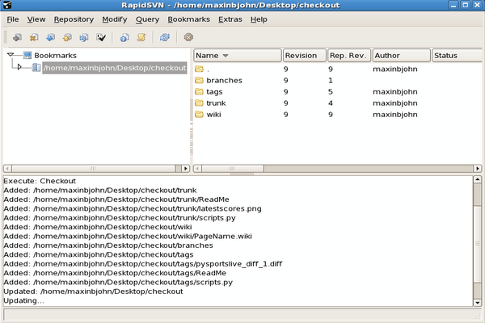
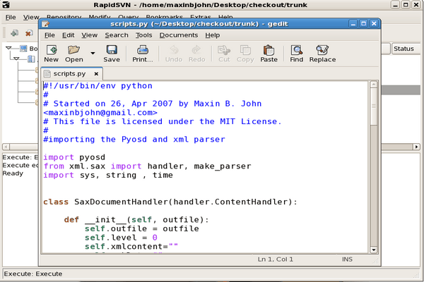
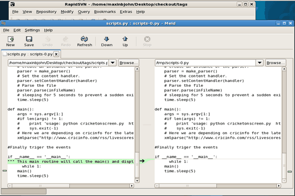

...making Linux just a little more fun!
Ben Okopnik [ben at linuxgazette.net]
Hi, all -
We've got somebody that just volunteered to translate bits and pieces of LG into Arabic. Since he's working by himself, and is not a native speaker (and since I can't read Arabic myself), does anyone here have the ability to vet the stuff? It's at 'http://arlinux.110mb.com/lgazet/'.
-- * Ben Okopnik * Editor-in-Chief, Linux Gazette * http://LinuxGazette.NET *
[ Thread continues here (3 messages/2.22kB) ]
Ben Okopnik [ben at linuxgazette.net]
[[[ I took the liberty of retitling this one. -- Kat ]]]
----- Forwarded message from rahul d <incubus_maddy@yahoo.com> -----
Date: Mon, 21 Jan 2008 00:15:31 -0800 (PST) From: rahul d <incubus_maddy@yahoo.com> Subject: None To: editor@linuxgazette.nethi, i'm a python noob. Read one of ur articles. just mailed u ppl to tell you guys tht u ppl r doin a nice job... regards Rahul
----- End forwarded message -----
-- * Ben Okopnik * Editor-in-Chief, Linux Gazette * http://LinuxGazette.NET *
Neil Youngman [ny at youngman.org.uk]
I've had a badly configured Debian on a Core2 Duo system for a while and I am starting again from scratch. The area where I am having trouble finding guidance is support for 32 bit programs and plugins on the AMD64 architecture.
I have found various recipes for getting specific programs working. Many of them appear to involve maintaining a separate i386 architecture installation in addition to the main AMD64 installation.
I am not keen on on maintaining 2 installations, nor am I keen on piecemeal solutions for each 32 bit program I may need to run. Can anybody point me to a good guide on the issues involved and/or a general solution to the problem of running 32 bit code on AMD64 debian?
Neil Youngman
[ Thread continues here (2 messages/2.50kB) ]
Karl-Heinz Herrmann [kh1 at khherrmann.de]
Hi Tags's,
at work we are suffering from the ever increasing amount of data. This is a Medical Physics Group working with MRI (magnetic resonance imaging) data. In worst case scenarios we can produce something like 20GB of data in an hour scantime. Luckily we are not scanning all the time .-) Data access safety is mostly taken care of by firewalls and access control outside our responsibility. But storing and backups are our responsibility.
Currently we have about 4-6 TB distributed over two "fileservers" (hardware raid5 systems) and two systems are making daily backups of the most essential part of these data (home, original measurement data). The backup machines are taking more than a full night by now and can't handle anything while backuppc is still sorting out the new data. The machine the backup is from is fine by morning.
We will have a total of three number crunching machines over the year and at least these should have speedy access to these data. Approx. 20 hosts are accessing the data as well.
Now we got 10k EU (~15k $US) for new backup/file storage and are thinking about our options:
* Raid system with iSCSI connected to the two (optimally all three) number crunchers which are exporting the data to the other hosts via NFS. (eSATA any good?) * an actual machine (2-4 cores, 2-4GB RAM) with hardware raid (~24*1TB) serving the files AND doing the backup (e.g. one raid onto another raid on these disks) * A storage solution using fibre-channel to the two number crunchers. But who does the backup then? The oldest number cruncher might be able to handle this nightly along with some computing all day. But it hasn't got the disk space right now.The surrounding systems are all ubuntu desktops, the number crunchers will run ubuntu 64bit and the data sharing would be done by NFS -- mostly because I do not know of a better/faster production solution.
The occasional Win-access can be provided via samba-over-nfs on one of the machines (like it does now).
Now I've no experience with iSCSI or fibre channel under Linux. Will these work without too much of trouble setting things up? Any specific controllers to get/not to get? Would the simultaneous iSCSI access from two machines to the same raid actually work?
I also assume all of the boxes have 2x 1Gbit ethernet so we might be able to set up load balancing -- but the IP and load balancing would also have been tought to our switches I guess -- And these are "outside our control", but we can talk to them. Is a new multi core system (8-16 cores, plenty RAM) able to saturate the 2xGbit? Will something else max out (hypertransport, ... )?
Any ideas -- especially ones I did not yet think of -- or experiences with any of the exotic hardware is very much welcome....
Karl-Heinz
[ Thread continues here (7 messages/33.12kB) ]
Rick Moen [rick at linuxmafia.com]
----- Forwarded message from Rick Moen <rick@linuxmafia.com> -----
Date: Thu, 27 Dec 2007 21:16:21 -0800 To: svlug@lists.svlug.org From: Rick Moen <rick@linuxmafia.com> Subject: Re: [svlug] recommended percentage swap on 400G driveQuoting Darlene Wallach (freepalestin@dslextreme.com):
> Is there a percentage of the disk size I should calculate for > swap?
The amount of desirable swap on your system, and its placement, really isn't directly related to disk size (except in the "you have to have X amount of space in order for allocating Y from it to be reasonable" sense): It's more related to total system physical RAM than anything else, and secondarily to your usage patterns with that RAM (number of active apps, RAM footprint of each of those).
The rule of thumb on all *ixes that you'll see quoted ad nauseam is that total swap space should generally be somewhere from 1.5x to 2 or 3x total physical RAM.[1] If your system has multiple physical hard drives, all of which are roughly similar in overall speediness, then ideally you want to put some swap on each physical drive -- max no. being 32 ;-> -- so that the (fairly intelligent) swapper process can split the necessary seeking[2] activity between them, for best performance through parallelism. By contrast, if any of the drives is markedly slower[3], it's still worth putting some swap on it, but you'd want to specify a lower swap priority to the swapper process. (See "man 2 fstab" or "man 8 swapon" for details.)
Ideally, you would also want to physically place the swap partitions between other partitions in a manner calculated to (you hope) reduce average seek time by keeping the heads in the general vicinity more often than not.
As if all this detail wasn't enough to contend with, it turns out that Linux swap files (as opposed to partitions) are a contender again. They were common in very early Linux days, but fell out of favour when it emerged that swap partitions yielded much better performance. However, it turns out that, with the 2.6.x kernel series, swap files once again have competitive performance, and might be worth using. See: http://lkml.org/lkml/2006/5/29/3
[1] This is an OK rough heuristic, but obviously doesn't fit all usage models. In general terms, you want enough swap so that you're very unlikely to get tasks killed by the out-of-memory killer for lack of virtual memory, even when your system is heavily loaded. Too much swap really only wastes disk space, which is relatively cheap and plentiful, so most people are wise to err slightly on the side of overallocation.
Theoretically, if you had huge gobs of RAM, e.g., 64GB RAM, in relation to your usage, some would argue that you should have no swap (and certainly not 128GB of it!), since you're basically never going to need to swap out files or processes at all. But actually, memory pages managed in virtual memory don't always back files at all, as Martin Pool points out in the page you cited (http://sourcefrog.net/weblog/software/linux-kernel/swap.html).
[ ... ]
[ Thread continues here (1 message/4.15kB) ]
Suramya Tomar [security at suramya.com]
Hey Everyone, While surfing the web I found this following site (http://robertogaloppini.net/2007/12/02/open-source-licensing-sugarcrms-original-way-to-abide-the-gpl/) by Roberto Galoppini where he talks about how the SugarCRM has managed to keep almost the same licensing requirements as before even after they started using the GPLv3 license.
Now I am not an expert by any stretch of imagination but from what I understood by reading this page and what I remember from the discussions/postings on TAG it looks like Roberto is making sense... Is that so or am I reading it incorrectly or missing something?
If thats the case then how does the GPLv3 prevent Badgeware programs from claiming to be open source if they use the attribution clause to force users to display their badges?
- Suramya
--Name : Suramya Tomar Homepage URL: http://www.suramya.com Disclaimer: Any errors in spelling, tact, or fact are transmission errors.
Kat Tanaka Okopnik [kat at linuxgazette.net]
[[[ The originating thread for this discussion is http://linuxgazette.net/147/misc/lg/transliterating_arabic.html -- Kat ]]]
On Tue, Jan 22, 2008 at 02:39:21PM -0500, Benjamin A. Okopnik wrote:
> Latin character set (ISO-8859-1 and such) to Russian, yes. > > Eh... I'll send this example, and hope the 8-bit stuff makes it through > the mail. > ``` > ben@Tyr:~$ tsl2utf8 -h > Mappings: > > A|<90> B|<91> V|<92> G|<93> D|<94> E|<95> J|<96> Z|<97> > I|<98> Y|<99> K|<9a> L|<9b> M|<9c> N|<9d> O|<9e> P|<9f> > R|<a0> S|<a1> T|<a2> U|<a3> F|<a4> H|<a5> C|<a6> X|<a7> > 1|<a8> 2|<a9> 3|<aa> 4|<ab> 5|<ac> 6|<ad> 7|<ae> 8|<af> > a|<b0> b|<b1> v|<b2> g|<b3> d|<b4> e|<b5> j|<b6> z|<b7> > i|<b8> y|<b9> k|<ba> l|<bb> m|<bc> n|<bd> o|<be> p|<bf> > r|<80> s|<81> t|<82> u|<83> f|<84> h|<85> c|<86> x|<87> > !|<88> @|<89> #|<8a> $|<8b> %|<8c> ^|<8d> &|<8e> *|<8f> > +|<91> > > ben@Tyr:~$ tsl2utf8 > samovar > <81><b0><bc><be><b2><b0><80> > babu!ka > <b1><b0><b1><83><88><ba><b0> > 7jno-^fiopskiy grax uv+l m$!% za hobot na s#ezd *@eric. > <ae><b6><bd><be>-<8d><84><b8><be><bf><81><ba><b8><b9> [...] > '''
Alas, as you may note from the above, it came through as utter mojibake, even though my system is capable of reading (some) Russian.
http://people.debian.org/~kubota/mojibake/
http://en.wikipedia.org/wiki/Mojibake
Hmm. Wikipedia sugests that I call it krakozyabry (крокозя́бры). ;)
This looked like a useful gizmo: http://2cyr.com/decode/?lang=en but it failed to produce anything ungarbled this time.
-- Kat Tanaka Okopnik Linux Gazette Mailbag Editor kat@linuxgazette.net
[ Thread continues here (26 messages/65.29kB) ]
Mike Orr [sluggoster at gmail.com]
Anybody tried the ASUS eee PC (http://en.wikipedia.org/wiki/Eee_pc) ? I'm thinking about getting the 8GB model which costs $500. It's a 2 lb subnotebook with 1 GB RAM, 8 GB flash "memory", and Xandros (based on Debian/Corel), and compatible with the Debian repository. I haven't seen one and they seem hard to find even mail order, though some Best Buys have the 4 GB model. My main concerns are the small keyboard, 800x600 screen, and one-button touchpad. But as a second computer for running Python, Firefox, Kopete, gvim, and maybe the Gimp when traveling, I think it might do OK.
Any opinions on the other Linux (sub)notebooks which have begun appearling? I thought about the Zonbu but it has a nonstandard version of Gentoo tied to their subscription plan.
-- Mike Orr <sluggoster@gmail.com>
[ Thread continues here (4 messages/5.13kB) ]
Martin J Hooper [martinjh at blueyonder.co.uk]
Just a quick question guys...
Backed up my Windows Document directory using rsync in Ubuntu with the following command line:
rsync -Havcx --progress --stats /home/martin/win/My\ Documents/* /home/martin/back/mydocs/(Mounted ntfs drive to mounted smbfs share)
If I run that again a few weeks or so later will it copy all 31000+ files again or will it just copy new and changed files?
[ Thread continues here (17 messages/14.27kB) ]
Ben Okopnik [ben at linuxgazette.net]
[[[ Discussion of UTF-8 problems in this thread have been split off to http://linuxgazette.net/147/misc/lg/problems_with_utf_8_over_smtp.html -- Kat ]]]
On Fri, Jan 18, 2008 at 08:43:12PM +0200, MNZ wrote:
> On Dec 30, 2007 5:50 PM, Ben Okopnik <ben@linuxgazette.net> wrote: > > Hi, all - > > > > We've got somebody that just volunteered to translate bits and pieces of > > LG into Arabic. Since he's working by himself, and is not a native > > speaker (and since I can't read Arabic myself), does anyone here have > > the ability to vet the stuff? It's at 'http://arlinux.110mb.com/lgazet/'. > > Hi, > I'm a native Arabic speaker. I can go through the translated text and > check it but I'm terrible at actually typing Arabic and I'm not that > good at it anyway.
A week or two ago, I hacked up a cute little Latin-Russian (UTF8) converter (faking a few bits along the way, since the Russian alphabet is longer than the English one), so I thought "heck, I'll just adjust it so it can do Arabic - that'll give MNZ an easy way to do it." [laugh] I knew that it was written right-to-left - I could handle that bit - but having looked at the character set, as well as the whole initial/medial/final/isolated thing, I've concluded that I'd be crazy to even try.
> I'll help with the translation as much as I can. I'll > start in a few days though because I have some exams right now.
That's great - just contact the project coordinator, and let me know if you guys need any help. Other than converters, of course. ;)
> PS: Is anyone doing an Esperanto translation? just wondering.....
LG's former editor, Mike Orr, is a one-man walking advert for the language - although he's not translating LG into it, AFAIK. You could always poke him about spreading the idea among his friends.
-- * Ben Okopnik * Editor-in-Chief, Linux Gazette * http://LinuxGazette.NET *
[ Thread continues here (5 messages/14.11kB) ]
Amit Kumar Saha [amitsaha.in at gmail.com]
Hi all,
I want to cross-compile a ARM Linux kernel (2.6.21.1) using gcc-4.1 on Ubuntu 7.04(i686) (2.6.20.15-generic). This will require a 'arm-linux-gcc' cross-compiler. Hence, to build the 'gcc-4.1' I started to build gcc for 'arm' target :
1. ./configure --target=arm 2. make [the dump is attached]The build process stops giving:
* Configuration arm-unknown-none not supported
How do I proceed beyond this?
Regards & Thanks, Amit
-- Amit Kumar Saha Writer, Programmer, Researcher http://amitsaha.in.googlepages.com http://amitksaha.blogspot.com
[ Thread continues here (7 messages/6.98kB) ]
Rick Moen [rick at linuxmafia.com]
[[[ This is a followup to "Version control for /etc" in http://linuxgazette.net/144/lg_mail.html -- Kat ]]]
A promising solution to the exact problem discussed earlier -- put together by my friend Joey Hess. See: http://kitenet.net/~joey/code/etckeeper/ One key ingredient is David H?rdeman's "metastore" (http://david.hardeman.nu/software.php), used to capture metadata that git would otherwise ignore.
----- Forwarded message from Jason White <jason@jasonjgw.net> -----
Date: Tue, 25 Dec 2007 19:07:59 +1100 From: Jason White <jason@jasonjgw.net> To: luv-main <luv-main@luv.asn.au> Subject: etckeeperFor those who are running Debian or debian-derived distributions, there is a relatively new package, etckeeper, which I have found rather useful: it maintains a revision history of /etc in a Git repository, including file permissions and other metadata not normally tracked by Git.
It is also invoked by Apt, using standard Apt mechanisms, to commit changes introduced into /etc when packages are installed or removed.
I don't know whether there exist any similar tools for non-Debian distributions.
----- End forwarded message -----
[ Thread continues here (4 messages/8.02kB) ]
Neil Youngman [Neil.Youngman at youngman.org.uk]
A little while back I bought a cheap HP desktop and today I decided to put a 2nd hard disk in. This is when I found that, although the spec sheet tells you you have a spare 3.5 in hard disk bay, it doesn't tell you that there are only 2 SATA connectors on the board and they are both in use! The PCB has spaces for 4 SATA connectors, but only 2 have been connected up, although bizarrely they have put in an IDE connector and a floppy connector.
Fortunately, I have a spare SATA controller, so I can still get the disk in. Unfortunately, when I boot Debian the disk order gets swapped, so GRUB sees the original disk as disk 1, but Debian sees it as disk 2. The upshot is that it refuses to boot, as it can not mount the root partition. Interestingly Knoppix still sees them in the expected order.
Using partition labels in /etc/fstab isn't a solution because it can't actually find /etc/fstab.
I have a temporary workaround, as I have swapped the DVD SATA connection to the second hard disk, so both are connected from the motherboard. This has the advantage that they are mounted in a predictable order, but the disadvantage is that I no longer have the option of booting from CDROM, without swapping the cables back.
Does anyone know how the disk order is determined and is there any way to force Debian to put the disks connected from the Motherboard ahead of those connected from the additional SATA controller?
Neil Youngman
[ Thread continues here (8 messages/10.01kB) ]
Peter [petercmx at gmail.com]
I have been following "Serving Your Home Network on a Silver Platter
with Ubuntu" which is an August article. Just what I needed  One problem is that I cannot access the Internet from a client. Not
sure why and do not know where to look. Any ideas please?
There are two NIC's, eth0 which connects only to the router and eth1
which is the local network connected to a hub.
This is the route from the server and it appears to work - I can ping
and download
One problem is that I cannot access the Internet from a client. Not
sure why and do not know where to look. Any ideas please?
There are two NIC's, eth0 which connects only to the router and eth1
which is the local network connected to a hub.
This is the route from the server and it appears to work - I can ping
and download
> routeKernel IP routing tableDestination Gateway Genmask > Flags Metric Ref Use Iface10.0.0.0 * > 255.255.255.0 U 0 0 0 eth1192.168.1.0 * > 255.255.255.0 U 0 0 0 eth0default > 192.168.1.1 0.0.0.0 UG 100 0 0 eth0
This is the route from a client. I can access the server by putty but I cannot reach the Internet.
Kernel IP routeing table Destination Gateway Genmask Flags Metric Ref Use Iface 10.0.0.0 * 255.255.255.0 U 0 0 0 eth0 link-local * 255.255.0.0 U 1000 0 0 eth0This is the hosts file on the server
$ cat /etc/hosts127.0.0.1 localhost127.0.1.1 spider # The following lines are desirable for IPv6 capable hosts::1 ip6-localhost ip6-loopbackfe00::0 ip6-localnetff00::0 ip6-mcastprefixff02::1 ip6-allnodesff02::2 ip6-allroutersff02::3 ip6-allhostsThis is the hosts file on the client (at present I need to switch the cable to get the Internet which is why there are two entries for spider)
127.0.0.1 localhost 127.0.1.1 client-1 10.0.0.88 spider 192.168.1.70 spider # The following lines are desirable for IPv6 capable hosts ::1 ip6-localhost ip6-loopback fe00::0 ip6-localnet ff00::0 ip6-mcastprefix ff02::1 ip6-allnodes ff02::2 ip6-allrouters ff02::3 ip6-allhostsAnd this is a trace from the client
tracert google.com google.com: Name or service not known Cannot handle "host" cmdline arg `google.com' on position 1 (argc 1)So I know not .... where should I look?
Peter
[ Thread continues here (14 messages/20.34kB) ]
Douglas Wiley [drwly at yahoo.com]
I have downloaded a program for the ARCHOS. It has an IPK extension that ARCHOS does not recognize. I am new to Linux. Can you help me fins out how to install this program?
Thanx -drw-
[ Thread continues here (6 messages/5.24kB) ]
Smile Maker [britto_can at yahoo.com]
Folks,
I have got a subversion repository running on /svn
Under that there are different directories /svn/a/aa ,/svn/b/bb like that.
I would like to send a mail to a group of ppl when the checkin happens in only /svn/a/aa this directory and sub dirs
I used post-commit script hook supplied with svn.
in that I added a line like
$REPOS/hooks/commit-email.pl "$REPOS" "$REV" -m "*aa*" britto@yahoo.com --diff "n" --from "ppl@mycom.com"this is not working.
-m makes the support to multiple project and it accepts regex as an argument.
whatever i have provided any thing wrong.........
This is not following link also doesnt help
http://svn.haxx.se/users/archive-2007-05/0402.shtml
Thanks in Advance
--- Britto
[ Thread continues here (2 messages/3.01kB) ]
Peter Knaggs [peter.knaggs at gmail.com]
I put together a bit of a writeup about using the Kodak V1253 (video) camera with Linux: http://www.penlug.org/twiki/bin/view/Main/HardwareInfoKodakV1253 It's one of the inexpensive cameras that does a fair job of capturing 720p video (1280x720), and it works over USB with gphoto2 / gtkam in linux.
Cheers, Peter.
[agarwal_naveen at ongc.co.in]
Sir
I am looking for linux driver to install kingston data silo ds100-S1mm tape drive. Can you pl. help me
Naveen
[ Thread continues here (2 messages/1.33kB) ]
Amit Kumar Saha [amitsaha.in at gmail.com]
Hello!
Does any one here have experience using a RAID Simulator or know of any? Basically, what I am looking for is 'emulating' RAID on a single computer, single hard disk.
Looking forward to some insights
Regards, Amit
-- Amit Kumar Saha Writer, Programmer, Researcher http://amitsaha.in.googlepages.com http://amitksaha.blogspot.com
[ Thread continues here (12 messages/19.60kB) ]
Ben Okopnik [ben at linuxgazette.net]
Hey, Pythoneers -
I've just installed the "unicode" package after finding out about it from Ren<a9>; it sounds like a very cool gadget, something I can really use... but it appears to be broken:
ben@Tyr:~$ unicode
Traceback (most recent call last):
File "/usr/bin/unicode", line 159, in ?
out( "Making directory %s\n" % (HomeDir) )
File "/usr/bin/unicode", line 33, in out
sys.stdout.write(i.encode(options.iocharset, 'replace'))
NameError: global name 'options' is not defined
Line 570 says
(options, args) = parser.parse_args()but even if I give it an arg like "-h", it still gives me the same error. Any suggestions for fixing it before I turn it in to the Ubuntu maintainers?
-- * Ben Okopnik * Editor-in-Chief, Linux Gazette * http://LinuxGazette.NET *
[ Thread continues here (3 messages/4.38kB) ]
[ In reference to "Linux on an ARM based Single Board Computer" in LG#145 ]
Bart Massey [bart.massey at gmail.com]
The US Distributor of this product appears to be Hightech Global ( http://www.hitechglobal.com/Boards/Armadillo9.htm), who is selling it for $645. In my humble opinion, that price is substantially too high. For comparison, the apparently much more powerful, physically much smaller Gumstix Verdex XL6P ( http://gumstix.com/store/catalog/product_info.php?cPath=27&products_id=178) costs $169, plus perhaps another $100 for various expansion boards--you'd want at least the $24 VX Breakout board, which has the host USB port on it. (I'm not affiliated in any way with Gumstix, nor have I ever purchased any of their products. I'm thinking seriously about it, though.)
Just thought folks should know.
[ Thread continues here (3 messages/2.40kB) ]
[ In reference to "Mailbag" in LG#145 ]
Ben Okopnik [ben at linuxgazette.net]
----- Forwarded message from Sitaram Chamarty <sitaramc@gmail.com> -----
Date: Wed, 5 Dec 2007 14:02:28 +0530 From: Sitaram Chamarty <sitaramc@gmail.com> To: ben@linuxgazette.net Subject: Re: compressed issues of LGMy apologies for sending an email to a thread that I only saw on the web site, and not being a member of the mailing list and all...
But in response to the above subject, I thought someone should mention that LZMA is the compression algo behind 7ZIP. Never mind what it says about 7-ZIP not being good for backups, because 7ZIP is the archive format, not the compression algo.
So, the usual "tar ... | lzma >some.file" will always work.
Also see http://lwn.net/Articles/260459/ if possible.
Regards,
Sita
----- End forwarded message -----
[ In reference to "/okopnik.html" in LG#issue84 ]
clarjon1 [clarjon1 at gmail.com]
Hey, all. I've recently downloaded a bunch of HTML files, and wanted to name them by their title. I remembered the scripts in the Perl One-Liner of the Month: The Adventure of the Misnamed Files (LG 84), and thought that they would be useful, as they seemed to be what I needed.
I first tried the one-liner, and instead of the zero, I got 258 (which, btw, is the number of files in the directory I was in) So I copied the "expanded" version of the script, and saved it as ../script1.pl. Ran it, it came up with 0 as output (which, according to the story, is a Good Thing), so I then tried the second one liner. Laptop thought for a second, then gave me a command line again. So, I run ls, and lo and behold! No changes. Tried it with the expanded version, saved as ../script2.pl. Same result.
I was wondering if you might know of an updated version that I could try to use? I'm not well enough versed in Perl to figure it out all on my own, and I'm not usre what (or where) I should be looking...
Also, for reference, the files are all html, and about half named with an html extension, and the other half have no extension.
Thanks in advance. I'd hate to have to do the task manually.
-- clarjon1
[ Thread continues here (3 messages/9.64kB) ]
[ In reference to "Digging More Secure Tunnels with IPsec" in LG#126 ]
Tim Chappell [tchappe1 at timchappell.plus.com]
Hi,
Having read your ipsec articles (125/126) I've been attempting to get a similar system going. I wonder if you can help? I'm trying to setup an ipsec VPN (tunnel mode) between two networks which are both behind DSL routers. I've managed to get it going successfully without the modems, but once they're in place it doesn't appear to work. Is such a thing possible? The modems both have ports 500/4500 open to allow NAT-T through (and AH/ESP passthrough).
[ ... ]
[ Thread continues here (2 messages/12.54kB) ]
[ In reference to "2-Cent Tips" in LG#145 ]
Thomas Adam [thomas at edulinux.homeunix.org]
On Thu, Nov 29, 2007 at 05:02:14PM +0700, Mulyadi Santosa wrote:
> Suppose you have recorded your console session with "script" command. > And then you want to display it via simple "less" command. But wait, you > see: (note: by default ls use coloring scheme via command aliasing, so > if you don't have it, simply use ls --color) > > ESC]0;mulyadi@rumah:/tmp^GESC[?1034h[mulyadi@rumah tmp]$ ls > ESC[00mESC[00;34mgconfd-doelESC[00m ESC[00;34mvir > tual-mulyadi.Bx4b1XESC > > How do you make these "strange" characters to appear as color? Use less > -r <your script file> and you'll see colors as they originally appear.
Which is only half the intention. You're still going to have to run the result via col(1) first:
col -bx < ./some_file > ./afile && mv ./afile ./some_file
-- Thomas Adam -- "He wants you back, he screams into the night air, like a fireman going through a window that has no fire." -- Mike Myers, "This Poem Sucks".
[ In reference to "Holiday Greetings to Everyone!" in LG#146 ]
Amit Kumar Saha [amitsaha.in at gmail.com]
Hello all!
New Year Greetings to all the members of the TAG and LG Staff.
Good Bless!
--Amit
[ In reference to "The Monthly Troubleshooter: Installing a Printer" in LG#130 ]
Ian Chapman [ichapman at videotron.ca]
Ben,
I had to edit a file to add myself to the folks including cups who could use your ben@Fenrir:~# head -60 /usr/share/dict/words > /dev/lp0 to get the printer going? Where and what was that file. I've looked back at article 130 and am not able to see it.
Regards Plain text Ian.
[ Thread continues here (2 messages/1.84kB) ]
[ In reference to "Migrating a Mail Server to Postfix/Cyrus/OpenLDAP" in LG#124 ]
René Pfeiffer [lynx at luchs.at]
Hello, Peter!
Glad to be of help, but please keep in mind posting replies also to the TAG list. Others might find helpful comments, which is never a bad thing.
On Dec 10, 2007 at 1428 -0600, Peter Clark appeared and said:
> [...] > Some more questions for you, if you do not mind. > > # Indices to maintain > > You have mailLocalAddress, mailRoutingAddress and memberUid being > maintained (in your example slapd.conf). What is calling upon them in > your example?
These attributes were supposed to be used in a future project, that's the main reason. I took the slapd.conf from a live server and anonymised the critical part of the configuration.
> You also have mail listed, isn't mail and mailLocalAddress > the same thing?
No, we only used the mail attribute in our setup, we ignored mailLocalAddress.
> Also, mailQuotaSize, mailQuotaCount,mailSizeMax; I > understand mailQuotaSize but did you restrict a user by the # of > messages in their account (mailQuotaCount) and how did you use > mailSizeMax?
These attributes are used by the quota management system, which I didn't describe in the article. It is basically a web-based GUI where administrators can change these values. Some scripts read the quota values from the LDAP directory and write it to the Cyrus server by using the Cyrus Perl API. mailSizeMax isn't used in the setup, but again it was supposed to be.
> Doesn't imap.conf and main.cf hold those values?
AFAIK the imap.conf only holds IMAP-relevant things. Cyrus is only interested in the authentication, and this is done by saslauthd. main.cf only holds references to the configuration files that contain the LDAP lookups.
> Does the order in which the indices are listed matter? > > ie could: > index accountStatus eq > index objectClass,uidNumber,gidNumber eq > index cn,sn,uid,displayName,mail eq,pres,sub > > be written: > index cn,sn,uid,displayName,mail eq,pres,sub > index accountStatus eq > index objectClass,uidNumber,gidNumber eq > > also couldnt: > index accountStatus eq > index objectClass,uidNumber,gidNumber eq > be combined to: > index accountStatus,objectClass,uidNumber,gidNumber eq > > Is it separated due to visual aesthetics or does it make a difference to > the database somehow?
Frankly I doubt that the order matters. The indices I used are an educated guess. Having too much indices slows things down, having too few leads also to low performance. Generally speaking all attributes that are accessed often should have indices.
[ ... ]
[ Thread continues here (3 messages/27.05kB) ]
Ben Okopnik [ben at linuxgazette.net]
For various odd reasons [1], Ubuntu's 64-bit implementation of the 'usb-serial' module results in downloads over serial links using it (e.g., GPRS-based cell cards) stalling on a regular basis. Eventually - say, within a minute or two - these hangups resolve, and given that many protocols implement some kind of a retry routine, the download continues - but there are a few exceptions: notably 'apt-get' and some HTTP downloads. These simply drop the connection with a "timeout" error message. This, especially in the former case, can be really painful.
Here are a couple of methods that I've found to make life easier. In testing these over the past several months, I've found them to be fairly reliable.
HTTP: 'wget' is a great tool for continuing broken downloads (that's what that "-c" option is all about) - especially if it's properly configured. This doesn't require much: just create a ".wgetrc" file in your home directory and add the following lines:
read_timeout = 10 waitretry = 10After you do that, both 'wget' and 'wget -c' become much more friendly, capable, and hard-working; they no longer hang around with shady types, drink up their paychecks, or kick the dog. Life, in other words, becomes quite good.
apt-get: This one takes a bit more, but still doesn't involve much difficulty. Add the following entries to your '/etc/apt/apt.conf':
Acquire::http::Retries "10"; Acquire::http::timeout "10";Then, whenever you don't want to stay up all night nursing your 'apt-get upgrade' or whatever, launch it this way (assuming that you're root):
until apt-get -y upgrade; do sleep 1; doneThis will keep relaunching 'apt-get' until it's all done - and will time out quickly enough when the link stalls that you won't be wasting much time between retries. This is a big improvement over the default behavior.
[1] I did some Net research at the time, and found several discussions that support my experience and diagnosis; unfortunately, I don't recall the search string that I used back then, and can't easily dig these resources up again. "The snows of yesteryear", indeed...
-- * Ben Okopnik * Editor-in-Chief, Linux Gazette * http://LinuxGazette.NET *
clarjon1 [clarjon1 at gmail.com]
Well, here's a little tidbit I've found that may be of use to some people. As many KDE users may know, you can have a keyboard shortcut set to lock the screen. You can do the same with just starting the screensaver!
Create a new item in the KDE menu editor, name it whatever youwant, and have it to run this command: kdesktop_lock --dontlock
Set it to a keyboard shortcut, save the menu, and viola! You now have a keyboard shortcut to start your screensaver.
[ Thread continues here (2 messages/1.63kB) ]
Samuel Bisbee-vonKaufmann [sbisbee at computervip.com]
Greetings,
I got a USB toy for Christmas that didn't have a *nix client. After some detective work I found a Perl module that did what I needed, except that the module tried to access the toy with specific vendor and product ids. For whatever reason my toy's ids did not match, so I modified the module to search for my device. [1]
The first step is to find the product name for your device. This is easily done with `lsusb` on the command line.
Next, break our your text editor and write some code. Remember, because Perl uses libusb you will have to run your code as root; if you get errors about being unable to access the device, then this is probably the cause.
Here is the code that I used (was inside a sub, hence the use of 'return'):
my $usb = Device::USB->new;
my $dev;
foreach($usb->list_devices())
{
$dev = $usb->find_device($_->idVendor(), $_->idProduct()) and last if $_->product() eq "YOUR PRODUCT'S NAME FROM lsusb";
}
return -1 if !$dev;
This code iterates over the buses, checking each product's name for our
device's name from `lsusb`. If the device is found, then it will store
the handler in '$dev' and break out of the loop, else it will bubble the
error up by returning a negative value. When the device is found you
would claim and control it as normal (example in the 'new()' sub from
http://search.cpan.org/src/PEN/Device-USB-MissileLauncher-RocketBaby-1.00/lib/Device/USB/MissileLauncher/RocketBaby.pm).
If you are interested, I was playing with Device::USB::MissileLauncher::RocketBaby (http://search.cpan.org/~pen/Device-USB-MissileLauncher-RocketBaby-1.00/lib/Device/USB/MissileLauncher/RocketBaby.pm).
[1] It turns out that my USB toy uses the same ids; I probably just tried to run the code when the device was unplugged. Oh well, at least I got to learn how Perl interfaces with [USB] devices.
-- Sam Bisbee
[ Thread continues here (8 messages/18.33kB) ]
René Pfeiffer [lynx at luchs.at]
Hello!
I have a short shell script fragment for you. It automatically reenables a printer queue on a CUPS printing server. CUPS takes different actions when a print job encounters a problem. The print server can be configured to follow the error policy "abort-job", "retry-job" or "stop-printer". The default setting is "stop-printer". The reason for this is not to drop print jobs or to send them to a printer that is not responding. Beginning with CUPS 1.3.x you can set a server-wide error policy. CUPS servers with version 1.2.x or 1.1.x cna only have a per-printer setting.
If you have a CUPS server an wish the print queue to resume operation automatically after they have been stopped, you can use a little shell script to scan for disabled printers (stopped printing queues) and reenable them.
#!/bin/sh
#
# Check if a printer queue is disabled and reenable it.
DISABLED=3D`lpstat -t | grep disabled | awk '{ print $2; }'`
for PRINTER in $DISABLED
do
logger "Printer $PRINTER is stopped"
cupsenable -h 127.0.0.1:631 $PRINTER && logger "Printer $PRINTER has been enabled."
done
This script can be executed periodically by crontab or by any other
means.
Best, René.
[ Thread continues here (5 messages/5.98kB) ]
Mulyadi Santosa [mulyadi.santosa at gmail.com]
For some reasons, you might still need to uudecode a whole or some part of file(s). A good example is if you're a loyal Phrack reader just like I am. Most likely, the authors put uudecoded text right into the body of an article. Usually, it PoC (Proof of Concept) code so the readers can gain better understanding of the explanation and try it by themselves without re-typing the code.
So, you need uudecode but where is it? In recent distros like Fedora 7, it's packed into different name. For example, in Fedora it is gmime-uudecode and included in gmime RPM.
To execute, simply do something like below: $ gmime-uudecode -o result.tar.gz phrack-file-0x01.txt The above command assume you know the format of the uudecoded file. If you don't, just use arbitrary extension and use "file" command to find out.
You don't need to crop the text file, gmime-uudecode will scan the body of the text file, looking for a line containing "begin" string. The scanning ends at the line containing "end".
By Howard Dyckoff and Kat Tanaka Okopnik

|
|
Please submit your News Bytes items in plain text; other formats may be rejected without reading. A one- or two-paragraph summary plus a URL has a much higher chance of being published than an entire press release. Submit items to bytes@linuxgazette.net.
 Sun Pockets MySQL
Sun Pockets MySQL
At the same time Oracle was buying BEA, Sun announced its agreement to buy Open Source stalwart MySQL AB. It was only a billion or so. "As part of the transaction, Sun will pay approximately $800 million in cash in exchange for all MySQL stock and assume approximately $200 million in options." (from biz.yahoo.com) While there was some negative reaction (see ArsTechnica's posting here), many firms in the partner network around MySQL seemed supporting or accepting. Principal among these were those in the PHP community such as Harold Goldberg, CEO, Zend Technologies (the PHP company).
"This is a very good deal for the open source and web economies and it confirms the success of the LAMP (Linux-Apache-MySQL-PHP) stack as a web platform. The valuation of the transaction reflects the broad enterprise adoption of LAMP, which is also driving strong revenue growth at Zend Technologies. We have a long history of working closely with MySQL and are encouraged to see the senior roles the MySQL executives will play at Sun. It gives us confidence that we will be able to work with Sun, like we did with MySQL, to advance the innovation and open standards that power the adoption of the LAMP stack." - Harold Goldberg, CEO, Zend Technologies
Andi Gutman, co-founder of Zend and a PHP community leader, expressed support in his Jan 16th blog posting at http://andigutmans.blogspot.com/.
"...Sun missed the boat on the modern Web. Today there is very little of the huge PHP-based Web community that actually runs on Solaris."
Gutman noted that Sun needs to garner mindshare among the PHP community:
"In order to be successful, Sun has to recognize how significant PHP is for the MySQL user base and has to be pragmatic in how it thinks about and approaches this new business opportunity. By doing so they can truly use this acquisition as an opportunity to become a serious player in the modern Web server market."
MySQL and Zend have both promoted the popularity of the LAMP stack. These two companies have tremendous overlap in their customer bases and have worked closely together to ensure their products work well together. As a result, much of the modern Web uses PHP and MySQL.and both Zend and MySQL have been backed by Index Ventures.
According to MySQL VP Kaj Arno in his company blog: "...I expect Sun to add value to our community. I don't expect huge change, though. We continue to work with our quality contributors, we continue to provide our MySQL Forums, the Planet MySQL blog aggregator, we remain on the #mysql-dev and #mysql channels on Freenode, we provide MySQL University lessons, we meet at the MySQL Users Conference. We'll put effort into connecting the many FOSS enthusiasts and experts at Sun - whom we will now learn to know better - with our active user community." Sun was pushing PostgreSQL on Solaris in the last year and this switch to favoring MySQL was unexpected. The main thrust seems to be fulling out Sun's services portfolio and increased access to Linux users. Sun CEO Jonathon Schwartz noted the revenue opportunities for Sun and spoke of having a unique combination of developer resources for both a popular database and a Unix operating system. See his blog entry here: http://blogs.sun.com/jonathan/
Said Schwartz: "MySQL is already the performance leader on a variety of benchmarks - we'll make performance leadership the default for every application we can find (and on every vendor's hardware platforms, not just Sun's - and on Linux, Solaris, Windows, all). For the technically oriented, Falcon will absolutely sing on Niagara... talk about a match made in heaven." (Niagara is the multi-core SPARC processor)
He also wrote, "Until now, no platform vendor has assembled all the core elements of a completely open source operating system for the Internet. No company has been able to deliver a comprehensive alternative to the leading proprietary OS."
There is also a Sun blog posting about the high cost of proprietary databases and the growing "commoditization" of databases here: http://blogs.sun.com/jkshah/entry/cost_of_proprietary_database
An eWeek article compares the acquisition approaches of Sun and Oracle, noting that this further commits Sun to an Open Source strategy, and quotes industry analysts as favoring the Sun-MySQL deal. See: http://www.eweek.com/c/a/Enterprise-Apps/Oracle-Sun-Seek-Big-Buys/?kc=EWKNLENT011808STR2
Oracle closed its deal with BEA after upping its purchase price to $8.5 Billion dollars in January. BEA had been integrating its own purchases and has overlaps with the Oracle product line in portals, business process tools, and the ubiquitous Weblogic Java Application Server. Industry analysts view Oracle's motive primarily as a market share ploy, to position itself better vs. IBM and Microsoft.
The Wall Street Journal wrote "Acquisitions by Silicon Valley software giants Oracle Corp. and Sun Microsystems Inc. suggested a slowing economy and other forces could kick a recent wave of high-tech deals into higher gear." Wonder who's next??
AMD Acknowledges Faux Pas, Plans for New 8-way Opteron
"We blew it, and we're humbled by it," AMD CEO Hector Ruiz told a December analysts conference in New York. It has shipped few of its new quad-core architecture Opterons due to problems in the translation lookaside buffer (TLB). Although there are OS-level patches for the problems with almost no performance penalty, BIOS level workarounds can result in a 10% or greater performance penalty (and some worst case tests show a 30% hit). All the OEMs - Dell, HP, IBM, Sun, et al. - are careful not to incur a support nightmare, assuming customers may not install the OS patches correctly.
The TLB issue primarily impacts virtualization due to how guest OS might use some TLB registers. If the guest OS is patched not to use the registers, there is no need for a BIOS fix. So some Barcelona chips have been shipped for use in HPC clusters where bare metal performance is optimized, such as the Texas Advanced Computing Center at U of T. AMD said that it has shipped about 35,000 Barcelona chips by mid-December and it expects to ship "hundreds of thousands" by the first quarter of 2008. At the January earnings announcement, AMD did show that shipments for its 4-way chips were ramping up. (From Mercury News)
The Sunnyvale chip maker backed away from its previously stated goal of ending its string of losses in 2007, saying it's aiming to break even in the second quarter and turn an operating profit in the third quarter. It also confirmed it will delay the widespread launch of its "quad-core" server chip until the first quarter of next year. CEO Ruiz spoke encouragingly of "...a phenomenal transition year in 2008."
As recently as 2005, AMD was grabbing market share from rival Intel. But then came a series of missed deadlines on new products and price-cutting. The company also acknowledged that it significantly overpaid for ATI Technologies ($5.6 billion) and will write down the value of the biggest acquisition in AMD history.
The AMD road map includes a transition to 45nm process technology with Shanghai and Montreal processors as successors to Barcelona starting in the 3rd Quarter of 2008. The Montreal chip will sport an octal core in 2009 with a 1 MB L2 cache and 6-12 MB of L3 per cache, roughly matching or modestly exceeding the Intel roadmap. AMD is also a partner with IBM in developing a 32 nanometer chip fabrication process that may be cheaper and more flexible than the 32 nm process that Intel will use for its CPUs next year.
Also helping, in January, HP announced that it would sell a new consumer PC - the Pavilion m8330f - that uses AMD's new quad-core Phenom processor.
From ArsTechnica: http://arstechnica.com/news.ars/post/20071213-forecasting-2008-amd-strikeapologiststrike-analyst-day.html
AMD acknowledges quad-core woes; Promises rebound; Highlights roadmap
http://blogs.zdnet.com/BTL/?p=7339&tag=nl.e622
Intel Splits from OLPC Board
Intel has decided to pursue its own plans for 3rd World student computers, ending its short association with the One Laptop Per Child project after only a few months on its board. In a January statement, the OLPC board said that Intel had violated written agreements with the board of directors, specifically in not helping to develop software jointly with the project. The OLPC statement also claimed that Intel "disparaged" the OLPC's XO laptop to developing nations that were in negotiations to purchase the XO.
The Intel scheme for 3rd world classrooms uses a small but more standard laptop with flash storage that runs Windows, while OLPC uses Linux and open source applications and has hardware -- especially the screen and keyboard -- more suitable for 3rd world environments. OLPC's XO also consumes substantially less power. The first models used a low-power AMD processor and Intel was angling to get OLPC to switch to a low-power Intel chip.
An Intel spokesperson claimed the issue was that OLPC wanted Intel to work "exclusively on the OLPC system".
Here are links to BBC pages that reviews features of both the OLPC XO and Intel's Classmate mini-laptop: http://news.bbc.co.uk/2/hi/technology/7094695.stm and http://news.bbc.co.uk/2/hi/technology/7119160.stm
JBuilder 2007 Named "Best Java IDE"
InfoWorld has named CodeGear's JBuilder 2007 the "Best Java Integrated Development Environment" as part of its recent 2008 Technology awards.
CodeGear is the developer tools foundry descended from Borland and its JBuilder 2007 IDE now runs on the open source Eclipse framework. JBuilder speeds the development of Java and Web-based applications. CodeGear makes tools for C/C++ and Java development as well as Ruby on Rails.
"I found a very smooth, very robust IDE with many innovative features. It's safe to say that CodeGear decided to throw everything it had at this release - and succeeded brilliantly," wrote Andrew Binstock, senior contributing editor at InfoWorld. "...JBuilder feels solid throughout - a remarkable achievement given its status as a first release on Eclipse."
To learn more about CodeGear and its products, visit www.codegear.com.
Details on all winners of the InfoWorld 2008 Technology of the Year awards are available online at: http://www.infoworld.com/
SCO-Novell Damage Claims Get a Court Date
The drama continues. A Federal judge has set an April date to determine just how much the SCO Group must compensate Novell for royalties it collected on Unix operating system licenses after Novell, and not SCO, was proven to be the copyright holder.
Utah district judge Dale Kimball set the trial for April 29 in Salt Lake City.
SCO must compensate Novell for the royalties it collected but its has less in the bank than that amount. Novell is concerned that SCO and its financial backers may try to extract or liquidate it assets before paying.
Exist Global Acquires DevZuzExist Global, a Philippines based software engineering firm, announced their acquisition of US-based open source expert DevZuz to create a system to help companies utilize outsourcing and overseas companies along with open source technologies to create a cost efficient and also successful software application.
DevZuz provides a platform that links enterprises to open source application developers. Exist's strength is their cost effective rapid software development. With the global demand for innovative software increasing, combining these companies will
http://www.exist.com/index.html
http://www.devzuz.com/web/guest/home
Eaton Corp/UbuntuIHV CertificationEaton Corporation announced that its MGE Office Protection Systems Personal Solution Pac v3 for Linux and Network Shutdown Module v3 is the "first UPS power management solution to receive Ubuntu's Independent Hardware Vendor (IHV) Certification". This software allows for default UPS integration and is designed to assure communication, monitoring and graceful shutdown during prolonged power disturbances.
MGE Office Protection Systems UPS hardware users can download the free
software at http://www.mgeops.com/index.php/downloads/software_downloads.
For additional information on MGE Office Protection Systems Linux
solutions, visit http://www.mgeops.com/index.php/products__1/power_management
.
For more information about Ubuntu and the IHV partners, visit http://webapps.ubuntu.com/partners/system/
.
To learn more about Eaton's complete line of MGE Office Protection
Systems products and service portfolio, visit www.mgeops.com.
TuxMobil Now Offers 7,000 Linux Guides for the LaptopThe TuxMobil project is the largest online resource on Linux and mobile computing, covering all aspects concerning Linux on laptops and notebooks. In ten years, Werner Heuser has compiled more than 7,000 links to Linux laptop and notebook installation and configuration guides.
These guides and how-tos are suitable for newbies as well as experts. Most of the guides are in English, but special TuxMobil sections are dedicated to other languages.
TuxMobil indexes the guides by manufacturer and model as well as by processor type, display size and Linux distribution. All major Linux distributions (RedHat, Fedora, Gentoo, Debian, Novell/SuSE, Ubuntu, Mandriva, Knoppix) and many not-so-well-known distributions are present. Other Unix derivatives like BSD, Minix and Solaris are also covered.
Linux installation guides for Tablet PCs and a survey of suitable drivers and applications like handwriting-recognition tools are described in a separate section.
TuxMobil provides details about Linux hardware compatibility for PCMCIA cards, miniPCI cards, ExpressCards, infrared, Bluetooth, wireless LAN adapters and Webcams.
http://tuxmobil.org/mylaptops.html
http://tuxmobil.org/tablet_unix.html
http://tuxmobil.org/hardware.html
http://tuxmobil.org/reseller.html
Open MokoOpenMoko, creator of an integrated open source mobile platform, is now a separate company.
"We have reached our initial milestone with the developer version of the Neo 1973 - the world's first entirely open mobile phone," said OpenMoko CEO Sean Moss-Pultz.
OpenMoko also announced a partnership with Dash Navigation, Inc. The Dash Express, an Internet-connected GPS device for the consumer market, runs on the Neo mobile hardware and software platform. The Dash Express is now available for pre-order directly from Dash Navigation.
In further news, OpenMoko announced it has inked a deal with mobile device distributor, Pulster, in Germany. Pulster specializes in online sales of mobile devices, selling into the industrial and education markets with focus on Linux-based solutions. Pulster will distribute the Neo 1973 and Neo FreeRunner, a Wi-Fi-enabled mobile device with sophisticated graphics capable of handing a new generation of open source mobile applications.
http://www.openmoko.com
http://www.dash.net
http://www.pulster.de/
Demonstrating Open Source Health Care Solutions (DOHCS '08) at
SCaLEAn opportunity for providers, administrators, technical people and journalists in the health field to see firsthand how open source is making strong in-roads and hear real world success stories firsthand.
A number of the presenters and sponsors were just featured by the California Health Care Foundation (CHCF) in their analysis here: http://www.chcf.org/topics/view.cfm?itemID=133551
InfoWorld's Virtualization Executive Forum - Free Feb 4, Hotel Nikko, San Francisco, CA https://ssl.infoworld.com/servlet/voa/voa_reg.jsp?promoCode=VIPGST
Southern California Linux Expo - SCaLE 2008 February 8 - 10, Los Angeles, CA www.socallinuxexpo.org
Florida Linux Show 2008 February 11, Jacksonville, FL http://www.floridalinuxshow.com
JBoss World 2008 February 13 - 15, Orlando, FL http://www.jbossworld.com
COPU Linux Developer Symposium February 19 - 20, Beijing, China http://oss.org.cn/modules/tinyd1/index.php?id=3
FOSDEM 2008 February 23 - 24, Brussels, Belgium http://www.fosdem.org/
USENIX File and Storage Technologies (FAST '08) February 26 - 29, San Jose, CA http://www.usenix.org/fast08/
Sun Tech Days February 27 - 29, Hyderabad, India http://developers.sun.com/events/techdays
Software Development West 2008 March 3 - 7, Santa Clara, CA http://sdexpo.com/2008/west/register.htm
O'Reilly Emerging Technology Conference 2008 March 3 - 6, Marriott Marina, San Diego, CA http://conferences.oreilly.com/etech
Sun Tech Days March 4 - 6, Sydney, Australia http://developers.sun.com/events/techdaysCeBIT 2008 March 4 - 9, Hannover, Germany http://www.cebit.de/
DISKCON Asia Pacific March 5 - 7, Orchid Country Club, Singapore Contact: pslim@idema.org
Novell BrainShare 2008 March 16 - 21, Salt Palace, Salt Lake City, UT www.novell.com/brainshare (Early-bird discount price deadline: February 15, 2008)
EclipseCon 2008 March 17 - 20, Santa Clara, CA http://www.eclipsecon.org/ ($1295 until Feb 14, higher at the door; 15% discount for alumni and Eclipse members)
AjaxWorld East 2008 March 19 - 20, New York City http://www.ajaxworld.com/
SaaScon March 25 - 26, Santa Clara, CA http://www.saascon.com
Sun Tech Days April 4 - 6, St. Petersburg, Russia http://developers.sun.com/events/techdays
RSA Conference 2008 April 7 - 11, San Francisco, CA www.RSAConference.com (save up $700 before January 11, 2008)
2008 Scrum Gathering April 14 - 16, Chicago, IL http://www.scrumalliance.org/events/5--scrum-gathering
MySQL Conference and Expo April 14 - 17, Santa Clara, CA www.mysqlconf.com
Web 2.0 Expo April 22 - 25, San Francisco, CA sf.web2expo.com
Interop Las Vegas - 2008 April 27 - May 2, Mandalay Bay, Las Vegas, NV http:://www.interop.com/
JavaOne 2008 May 6 - 9, San Francisco, CA http://java.sun.com/javaone
Forrester's IT Forum 2008 May 20 - 23, The Venetian, Las Vegas, NV http://www.forrester.com/events/eventdetail?eventID=2067
DC PHP Conference & Expo 2008 June 2 - 4, George Washington University, Washington, DC http://www.dcphpconference.com/
Symantec Vision 2008 June 9 - 12, The Venetian, Las Vegas, NV http://vision.symantec.com/VisionUS/
Red Hat Summit 2008 June 18 - 20, Hynes Convention Center, Boston, MA http://www.redhat.com/promo/summit/
Dr. Dobb's Architecture & Design World 2008 July 21 - 24, Hyatt Regency, Chicago, IL. http://www.sdexpo.com/2008/archdesign/maillist/mailing_list.htm
Linuxworld Conference August 4 - 7, San Francisco, California http://www.linuxworldexpo.com/live/12/
Restful Ruby on Rails 2.0 Arrives on Track
The latest incarnation of the Ruby framework was a full version update that arrived in early December and was quickly patched in mid-December to Version 2.0.2. The 2.x version expands the commitment of the Ruby community to REST (Representational State Transfer) as the paradigm for web applications.
The new version follows a full year in development and implements new resources, a more Restful approach to development, and beefed up security to resist XSS (cross site scripting) and CSRF (cross site resource forgery - an area of increasing exploitation). The CSRF hardening comes from including a special token in all forms and Ajax requests, blocking requests made from outside of your application.
Rails 2.x also features improved default exception handling via a class level macro called 'rescue_from' which can be used to declaratively point certain exceptions to a given action.
All commercial database adapters are now in their own 'gems'. Rails now only ships with adapters for MySQL, SQLite, and PostgreSQL. Other adapters will be provided by the DB firm independently of the Rails release schedule.
Get the latest Ruby on Rails here (http://www.rubyonrails.org/down )
Debian 4.0.r2 Patches Security
The Debian community released an Etch "point release" in late December which included multiple security fixes for the Linux kernel that could allow escalation to root privileges, denial-of-service (DOS) attacks, and toeholds for malware. Application fixes are also included to prevent vulnerabilities from being exploited. Among effected applications are OpenOffice and IceWeasel (Debian's implementation of Firefox).
Other changes include stability improvements in specific situations, improved serial console support when configuring grub, and added support for SGI O2 machines with 300MHz RM5200SC CPUs (from mips). Etch was first released in April of 2007.
FreeBSD 6.3 Released
FreeBSD 6.3 was released in January and continues providing performance and stability improvements, bug fixes and new features. Some of the highlights include: KDE updated to 3.5.8, GNOME updated to 2.20.1, X.Org updated to 7.3; BIND updated to 9.3.4; Sendmail updated to 8.14.2; lagg driver ported from OpenBSD / NetBSD; Unionfs file system re-implemented; freebsd-update now supports an upgrade command.
FreeBSD 6.3 is dedicated to the memory of Dr. Junichiro Hagino for his visionary work on the IPv6 protocol and his many other contributions to the Internet and BSD communities. Read the release announcement and release notes for further information.
openSUSE 11.0 Alpha 1 in Testing
openSUSE 11.0, Alpha 1, is now available for download and testing. The main changes against Alpha 0 are: Sat Solver integration, Michael Schröder's 'sat solver' library is now the default package solver for libzypp; heavy changes to the appearance of the Qt installation (ported to Qt 4); KDE 4.0.0, Perl 5.10, glibc 2.7, NetworkManager 0.7, CUPS 1.3.5, Pulseaudio.
Here is the full release announcement.
MEPIS 7.0 is Released for Christmas
MEPIS has released SimplyMEPIS 7.0. The ISOs for the 32 and 64 versions are in the release directory at the MEPIS subscriber site and public mirrors.
The Mepis community also released the Mepis-AntiX 7.01 update for older PCs.
X.Org 7.4 Planned for Feb '08
New development versions of X.org were released January. Version 7.4 is scheduled to be released in late February 2008.
See the list of updated modules here: http://www.x.org/wiki/Releases/7.4
Major items on the ToDo list include a new SELinux security module and a new Solaris Trusted Extensions security module, both using XACE.
Perl 5.10 Released, First Update in 5 Years
The ubiquitous Perl language, the Swiss Army knife of the Internet and *ix distros, has got a whole new bag. The famous parsing interpreter gains speed, while shedding weight, claims Perl Buzz. Other interpreter improvements include:
A simplified, smarter comparison operator is now in Perl 5.10. On this new feature, Perl Buzz comments, "The result is that all comparisons now just Do The Right Thing, a hallmark of Perl programming."
Other new language features include:
The Perl development team, called the Perl Porters, has taken working features from the ambitious Perl 6 development project to add useful functionality and to help bridge to the future version. Perl 5.10 is available here: ftp://ftp.cpan.org/pub/CPAN/src/5.0/
See a slide show on new Perl features at http://www.slideshare.net/rjbs/perl-510-for-people-who-arent-totally-insane
Scribus 1.3.3.10The Scribus Team is pleased to announce the release of Scribus 1.3.3.10 This stable release includes the following improvements:
One of the major additions to this release is the final complete German translation of the Scribus documentation by Christoph Schäaut;fer and Volker Ribbert.
The Scribus Team will also participate again at the Third Libre Graphics Meeting in Krakow, Poland in May. LGM is open to all and the team welcomes seeing users, contributors and potential developers. For more info see: http://www.libregraphicsmeeting.org/2008/
Public Beta of VMware Stage Manager
VMware Stage Manager, a new management and automation product that streamlines bringing new applications and other IT services into production. Building on the management capabilities of VMware Infrastructure, VMware Stage Manager automates management of multi-tier application environments - including the servers, storage and networking systems that support them - as they move through various stages from integration to testing to staging and being released into production.
Stage Manager should setup pre-production infrastructure while enforcing change and release management procedures.
For more information on VMware Stage Manager or to download the beta, please visit http://www.vmware.com/go/stage_manager_beta.
Apatar Open Source Data Integration Partners with MySQL AB
Apatar, Inc., a provider of open source data integration tools, has joined the MySQL Enterprise Connection Alliance (MECA), the third-party partnership program for MySQL AB. This will make It easier to integrate MySQL-based solutions with other data sources, such as databases, CRM/ERP applications, flat files, and RSS feeds.
Apatar has released open source tools that enable non-technical staff to easily link information between databases (such as MySQL, Microsoft SQL Server, or Oracle), files (Excel spreadsheets, CSV/TXT files), applications (Salesforce.com, SugarCRM), and the top Web 2.0 destinations (Flickr, Amazon S3, RSS feeds).
Apatar tools include:
Apatar Enterprise Data Mashups (www.apatar.com ) Apatar Enterprise Data Mashups is an open source on-demand data integration software toolset, which helps users integrate information between databases, files, and applications. Imagine if you could visually design (drag-and-drop) a workflow to exchange data and files between files (Microsoft Excel spreadsheets, CSV/TXT files), databases (such as MySQL, Microsoft SQL, Oracle), applications (Salesforce.com, SugarCRM), and the top Web 2.0 destinations (Flickr, RSS feeds, Amazon S3), all without having to write a single line of code. Users install a visual job designer application to create integration jobs called DataMaps, link data between the source(s) and the target(s), and schedule one-time or recurring data transformations. Imagine this capability fits cleanly and quickly into your projects. You've just imagined what Apatar can do for you.
ApatarForge (www.apatarforge.org ) ApatarForge is an on-demand service, released under an open-source license, which allows anyone to build and publish an RSS/REST feed of information from their favorite Microsoft Excel spreadsheets, news feeds, databases, and applications. ApatarForge is the community effort where business users and open source developers publish, share, and re-use data integration jobs, called DataMaps, over the web. ApatarForge is the prime destination for Apatar users to collaborate and extend an Apatar Data Integration project. ApatarForge.org now hosts more than 160 DataMaps containing metadata. All DataMaps are available for free download at www.apatarforge.org.
For more information on how MySQL can be used with Apatar, please visit http://solutions.mysql.com/solutions/item.php?id=441
Emerson, Liebert Introduce Software-Scalable Ups
Emerson Network Power announced its new Liebert NX UPS with Softscale technology, delivering "the first software scalable UPS for data centers". Designed for small and medium size data centers, the UPS allows customers to pay for only the UPS capacity they while providing the flexibility to purchase and unlock additional capacity when needed via a simple software key. Visit here for more information: (http://www.liebert.com/newsletters/uptimes/2007/11nov/liebertnx.asp)
Free power and cooling monitoring tool for Liebert customers To help better maintain a data center's power and cooling infrastructure, Emerson Network Power is now offering a facility management tool to all Liebert service contract customers at no additional cost. The Customer Services Network is a web-based monitoring and reporting tool that provides you with up-to-date information on every piece of critical protection equipment, right from your desktop. Visit here for the complete story: (http://www.liebert.com/newsletters/uptimes/2007/11nov/customerservicesnetwork.asp )
Good OS Announces Debut of gOS 2.0 "Rocket" at CESGood OS, the open source startup introduced gOS, a Linux operating system with Google and web applications, on a $199 Wal-Mart PC last November.
gOS 2.0 "Rocket" is packed with Google Gears, new online offline synchronization technology from Google that enables offline use of web apps; gBooth, a browser-based web cam application with special effects, integration with Facebook and other web services; shortcuts to launch Google Reader, Talk, and Finance on the desktop; an online storage drive powered by Box.net; and Virtual Desktops, an intuitive feature to easily group and move applications across multiple desktop spaces.
gBooth is the first of many web apps to come specially customized for gOS. gBooth is powered by gOS spin-off, meebooth, a browser-based web cam application that makes it fun and easy to capture photos, add special effects, and share across Facebook, YouTube and other web services. To introduce a gOS compatible web cam, gOS and meebooth partnered with leading web cam manufacturer Ezonics to create the "gCam," a web cam compatible with gOS and gBooth.
Rocket will be available online on January 7, 2008 as a free download. Rocket requires minimum 128MB of RAM, 400 MHz processor, and 3GB disk space. The launch of gOS Rocket will coincide with the launch of new web cam, developer kit, desktop, and notebook products:
Ezonics gCam available direct at http://www.ezonics.com.
gOS Rocket Developer Kit with VIA motherboard and CPU http://ClubIT.com.
Everex CloudBook, gPC, gPC mini, gBook available at Wal-Mart.com and others February 2008. http://everex.com
For information on gOS or to download a free copy of gOS Rocket see www.thinkgos.com.
Concurrent NightStar LXConcurrent announced the release of a new generation of its NightStar LX debugging and analysis tools now available for Ubuntu Linux. NightStar is a powerful, integrated GUI tool set for developing and tuning time-critical applications on x86-based platforms. NightStar's advanced debugging features enable system builders to solve difficult problems quickly.
With this new release, NightStar LX now supports platforms running Ubuntu desktop and server editions in addition to Red Hat(r) Enterprise Linux and Novell(r) SUSE(r) Linux versions.
NightStar LX tools packages range from to $495 to $995. NightStar for Ubuntu Linux will be available on March 1. NightStar for Red Hat Enterprise Linux and SUSE Linux is available for immediate trial download and purchase. NightStar is supported on both 32-bit and 64-bit x86 platforms. For further information and demo sign up please visit http://www.ccur.com/nightstar
Nanowire Battery Can Hold 10x the Charge
Stanford researchers have found a way to use silicon nanowires to reinvent the rechargeable lithium-ion batteries that power personal electronics such as laptops, iPods, video cameras, and cell phones.
The new technology, developed through research led by Yi Cui, assistant professor of materials science and engineering, produces 10 times the amount of electricity of existing lithium-ion, known as Li-ion, batteries. A laptop that now runs on a normal battery for two hours could operate for 20 hours, a boon to ocean-hopping business travelers. With such greatly expanded storage capacity, the new batteries would also be attractive to electric car manufacturers. "It's not a small improvement," Cui said. "It's a revolutionary development."
The electrical storage capacity of a Li-ion battery is limited by how much lithium can be held in the battery's anode, which is typically made of carbon. Silicon has a much higher capacity than carbon. The lithium is stored in a forest of tiny silicon nanowires, each with a diameter one-thousandth the thickness of a sheet of paper. The nanowires inflate four times their normal size as they soak up lithium. But, unlike other silicon shapes, they do not fracture.
The breakthrough is described in a paper, "High-performance lithium battery anodes using silicon nanowires," published online Dec. 16 in Nature Nanotechnology, written by Cui, his graduate chemistry student Candace Chan and five others. The online article is accessible by subscription to Nature: http://www.nature.com/nnano/journal/vaop/ncurrent/full/nnano.2007.411.html
Talkback: Discuss this article with The Answer Gang
Howard Dyckoff is a long term IT professional with primary experience at
Fortune 100 and 200 firms. Before his IT career, he worked for Aviation
Week and Space Technology magazine and before that used to edit SkyCom, a
newsletter for astronomers and rocketeers. He hails from the Republic of
Brooklyn [and Polytechnic Institute] and now, after several trips to
Himalayan mountain tops, resides in the SF Bay Area with a large book
collection and several pet rocks.
Howard maintains the Technology-Events blog at
blogspot.com from which he contributes the Events listing for Linux
Gazette. Visit the blog to preview some of the next month's NewsBytes
Events.


Kat likes to tell people she's one of the youngest people to have learned to program using punchcards on a mainframe (back in '83); but the truth is that since then, despite many hours in front of various computer screens, she's a computer user rather than a computer programmer.
Her transition away from other OSes started with the design of a massively multilingual wedding invitation.
When away from the keyboard, her hands have been found wielding of knitting needles, various pens, henna, red-hot welding tools, upholsterer's shears, and a pneumatic scaler. More often these days, she's occupied with managing her latest project.
With graphical user interfaces becoming more and more friendly and easy to use, new users of GNU/Linux and the BSDs can now get their daily work done without having to tinker around (very often) with a terminal. However, many users don't like to use a GUI for every task, and find that they necessarily need to depend on some terminal, or shell. Sometimes, one has to log in to a remote machine, without a GUI. At other times, we just have to run a `console' based application. Under such situations, there are several ways in which a utility like screen can be put to efficient use.
Without describing screen in detail (it's done wonderfully in the manuals and tutorials), let me just give you a typical situation which many of you may be able to relate to and describe how screen helps me be more efficient:
So, I am going to show you how screen comes to our rescue for both these situations. This is going to be more of explaining how I achieved my goals, and less about the details on why I am doing it, or what other (and better) ways of accomplishing things exist in screen. I will just mention some tips at the end, and point you to the manual to learn more, as my intention is to get you to learn screen for the power and flexibility it offers while being very simple.
OK, fire up your favourite terminal emulator (or go to a virtual
terminal) and type screen. And that's it!
OK, well, if you do that, you would, in all likelihood, notice nothing special, and observe that another shell has come up. But you can be sure that you are running screen in quite a few ways. One simple *but not foolproof) way, is to check the TERM environment variable.
echo $TERM
In all likelihood, it'll be `screen', instead of vt100, linux etc., confirming that you are running screen. Now, whenever I learn a new application, the first thing I like to do is to find out a sane way to exit it, so that I can bail ourselves out of trouble later, if needed. So, just exit the shell normally (by typing exit at the prompt or Ctrl+D for most shells), and you should observe that screen terminates. So, now that screen is ready and working, let's put it to good use.
For all screen commands and shortcuts, you need to enter a prefix
key. By default, this prefix key is bound to Ctrl+A (C-a). So, for
example, to create a new window, you would type C-a followed by
C-c. Now, C-a is quite a bad shortcut for people like me, who are used
to the behaviour of several applications, such as readline, emacs
etc., which use C-a to go to the beginning of a line. To work around
this, one can type C-a a to get the desired effect in screen, though
having to do this every time is a pain, and I describe at the end how
to map a different key as the prefix key for screen.
I am, however, assuming C-a to be the prefix key for the rest of this
document, though you can just substitute it with the new bound key if
you've read ahead; everything else remains the same.
Once you are in screen, it is very simple to manipulate and switch
windows. All you need to do to create a window is to type C-a
c, and you're in a new window. Of course, there doesn't
seem to be much difference between the windows, but here's a
simple way to check; in a window, dump some text (like typing ls
/usr/bin). Then, create a new window using C-a c. Then
keep switching using C-a n (for next window), and observe that
you actually are switching between the two different windows.
Now, create some windows, and do some stuff in each of them. Now, we've
really lost track of what we created, right? How do we get a list of open
windows? Simple, just do C-a ", and browse to the window
you want using the arrow keys and press enter to go to it.
Of course, most of the windows seem indistinguishable, as they seem to
be titled with the name of the shell they run (bash, in my case). So, it
would be better to name them, for your reference. To name a window, all you
need to do is, type C-a A, and modify the name to whatever you
want. If you get confused, C-a " will provide you with a list of
windows. This should get you up and away with creating multiple windows in
the same terminal. My example screenrc below shows a way to mimic
a multiple tab display which displays window names and numbers, which may
also be useful.
If you want to `close' a window, the best way would be to exit the shell
(or application) running in the window. In case you are unable to close the
application because it's hung, you could also kill the window and all its
applications using C-a k, but do avoid this when possible.
Exiting all active windows closes screen, and a message is displayed
indicating that.
This should give you a feel for some of the capabilities of screen. Often people have several applications running in each window of their screen, and they label the window for easy access. For example, I often run Mutt (a mail client) and irssi (an IRC client) on screen, and leave them running for easy access. Now that we are done with the window multiplexing part, let's go to the detaching and re-attaching part, and see how you can access your running applications even after closing the terminal, or from a remote location (by sshing to your machine).
There are several ways to browse across various windows in screen. Here are a few:
C-a " displays a menu from which you can choose
the window.C-a n and C-a p can be used to go to the next and previous windows
respectively; nice to cycle across consecutive windows.C-a <number> is another easy way to jump to another window.
Once you are comfortable with moving around in screen, we can move to the next feature, which I address as "workspace persistence".
So, you're in the middle of hacking this wonderful software which is going to change the way computers are used world over. (Or, you're just playing one of those console based games and think you can finish it this time). Now, you realise that it's time for work, and you have to leave! Don't panic, there is something you can do to retain all applications running in your screen windows as they were, so that you can either come back later and resume your work (or game), or connect to your computer from a remote place (via ssh, say) and resume the activity. Sounds fun, huh?
The way of achieving this on screen is by detaching and reattaching
screen. To leave all applications running in all your windows as they are,
you can do one of two things, depending on the situation. The easiest way,
if you are running screen from an X based terminal emulator (like XTerm,
gnome-terminal, konsole etc.), is to just close the terminal emulator
(using the exit button or File-Quit or one of the other standard
techniques). That way, screen catches the signal sent to it by the terminal
emulator, and keeps itself running even while allowing the terminal
emulator to close. The other (and more obvious) way to detach from a screen
is using the C-a d key combination, which returns to the shell
from which you started screen, with a "[detached]" message.
This is probably the only elegant way to detach if you are on a tty
terminal. To reattach to the running screen, all you need to do is to start
the terminal (or get to a tty terminal) and type screen -r, and
you will return to the same state in which you detached. In case you have
several screens deattached, you will get a list of available screens to
which you can attach. In such a case, just append the screen
-r command with the process ID of the screen you wish to attach to.
Also, in case you forget to detach from your screen before trying to
reattach from another location, you would need to detach and then reattach
using screen -dr.
To convince yourself that the applications in the screen windows
really keep running even after detach, you could perform this simple
test: Fire up screen and start some program, say a text based browser
like elinks or top, or start a really big download
using wget. Now, detach using the method described above, and
do ps ax|grep <appname> to verify that the application
is still running. For example, I ran elinks from within
screen, detached, and sure enough, ps ax|grep [e]links gave
me output containing elinks.
This way, you have the flexibility of opening up several applications in any number of windows, and the ability to conveniently access them from anywhere, as long as you can log into the computer on which you run screen.
There are other features of screen which I am not mentioning here, since
I really haven't explored them myself yet. However, note that you can read
the man page to get a fair idea of screen's capabilities. For help while
using the application, you can get a quick list of commands and the keys
they are bound to using the C-a ? key combination.
Before ending this introduction to screen, let me just give you a brief introduction to customising screen using the $HOME/.screenrc file, so that you can retain the settings for the next time you start up. Do read the screen man page for more information on the syntax and purpose of these commands.
# First of all, I really don't like C-a to be my key combination, since
# I use it a lot to get the same effect as the `Home' key. So, I choose
# C-\ as my preferred shortcut key by adding this line to my ~/.screenrc.
escape \034\034
# (If you are wondering, \034 is the key sequence C-\ in octal. Please
# read the documentation for `escape' in the screen man page to find out
# how I arrived at that).
# Prefer an audible bell to the visual one.
vbell off
# Skip the startup message
startup_message off
# Display a caption string below, appearing like tabs and
# displaying the window number and application name (by default).
caption always
caption string "%{kw}%-w%{wr}%n %t%{-}%+w"
# Special keys. C-a m will spawn Mutt, for example, on window 7 (if it
# is available), or the next available window.
bind m screen -t 'Mutt' 7 mutt
bind e screen -t 'Elinks' 8 elinks www.google.co.in
bind i screen -t 'Irssi' 9 irssi
This is a really simple screenrc, made by shamelessly copying from example screenrcs available from others' websites and blogs. You can get much better screenrcs by just searching the net, and finding out the innovative possibilities of customising screen.
This was my attempt to provide you a glimpse of the often used features of screen which I believe would be helpful to all terminal junkies who like to do a lot of switching between applications. Once you get started, there are many documents and tips you will find online to continue learning the advanced features of screen, though I would recommend a thorough reading of the screen man page to know the full capabilities of this wonderful software. I particularly recommend the information about monitoring window activity and splitting screen windows.
Comments and feedback welcome. Thanks!
Talkback: Discuss this article with The Answer Gang

Kumar Appaiah is studying to earn a B.Tech in Electrical Engineering and M.Tech in Communication Engineering (Dual-degree) at the Indian Institute of Technology Madras. He has been using GNU/Linux for the past five years, and believes that Free Software has helped him do work more neatly, quickly and efficiently.
He is a fan of Debian GNU/Linux. He loves using Mutt, GNU Emacs, XCircuit, GNU Octave, SciPy, Matplotlib and ConTeXt.
Small can be beautiful, as the adage goes. This can be especially true at a small conference with a few focused tracks that are smack on for your interests. On the other hand, a big conference increases the networking opportunities and also usually offers a large vendor expo. More vendors often means more literature and swag, but also more noise -- both literally on the show floor and figuratively with 'Me-Too' keynotes and marketing slideware. Those vendors are prospecting and the target is on your back.
2007 brought us some tightly focused conferences, some brand new, that were very satisfying to attend. One of the most interesting of this crop was the first Q-Con, a new offering from InfoQ and the JAOO conference. This is reviewed below.
On the Goliath side are some pretty big events: RSA World, VM World, BEA World, Software Development, JavaOne, and, most recently, Oracle OpenWorld.
The annual Oracle/Seibel/PeopleSoft/JDEdwards confab is by far the biggest event I attended last year with over 40,000 attendees and multiple venues to keep the user realms separate. They succeeded to a large measure in holding the business and executive tracks at different locations from the technical and developer tracks, but the armies of working tech people had to circumambulate between at least 3 different locations, one almost requiring a short bus ride.
There were lots of sessions, but sorting out the good ones from the chaff was a significant problem, all the more difficult due to seating limits and fire marshal rules. Since we had to sign up days in advance, there were few seats available for those who hadn't registered or who left their assigned sessions. Even more irritating, Oracle seemed to reassign a lot of us to under-attended business and product sessions -- this may have been a glitch since it occurred on the second day only, but I couldn't find some of the sessions I had applied for. Now 2 or 3 of these were wait-listed for me, so that may explain a few of the interventions, but the conference catalog was so huge it was almost impossible to figure out where I had originally applied. And since all the good sessions were full, I was being turned away from many alternate sessions I desired.
Oracle OpenWorld content is available here: http://www28.cplan.com/cc176/catalog.jsp
At the QCon website, they explain: "The QCon Conferences are organized by the community, for the community. As software developers and architects ourselves, we wanted to craft the ultimate conference that we would find outstanding, as attendees. " This conference was a good first effort.
Running up to 5 tracks that differed each day, there was less conflict and craziness here than most conferences. Session slides are publicly posted. Also, all sessions were audio taped and will be posted during the year.
QCon gets extra points for the best real-time session evaluations. No prep required, and no time during the session. At the door there are 3 stacks of cards, These are green, yellow. and red, standing for good, indifferent, or bad. Pick a card, drop it in the box. Done.
Attendees got a free mini InfoQ book. This was in lieu of conference bags which were held up in customs, and this seemed to be more appreciated by most attendees.
The evening keynote was especially entertaining. Called "50 in 50" it was an exercise in geek aesthetics and humor. Dick Gabriel and Guy Steele presented 50 years of computer languages in 50 minutes, and shared 50 remarks of exactly 50 words each. The Lisp section was accompanied by a parody song, "God programmed in Lisp code", truly a hoot.
Find conference info and slides at http://qcon.infoq.com/sanfrancisco
The Eclipse Foundation leads one of most vibrant open-standards eco-systems around and that work is most accessible at its annual March conference in Silicon Valley, EclipseCon. This was a small conference that has grown into a major event, with major sponsors, but its community roots and open source focus save it from the Goliath conference bloat -- so far. The pricing used to be under $1000, but it's now about $1500 at the door, so get those early-bird discounts if you want to attend.
With its new emphasis on web tools and rich client applications, the conference has gained new breadth. Technical detail remains good and the table topic format for the luncheons is one of the best ways to really network with people sharing common interests. And where else can you get keynotes from Cory Doctorow and 'Fake' Steve Jobs???
Several large vendors with primarily proprietary platforms are working with Eclipse to attract the developer community. This included BEA, which is now an Oracle property, as a major participator that offered free EclipseCon tutorials. Since IBM seeded a lot of the Eclipse code base, they also have a major presence.
EclipseCon 2008 has more than 350 tutorials and talks covering all aspects of Eclipse technology and commercial interests. Topics range from mobile computing to embedded devices and Java to C/C++. There are also special talks on business issues and open source. EclipseCon will be hosting the OSGi DevCon as well.
If you are interested in seeing a full list of sessions and tutorials, visit http://www.eclipsecon.org.
This is a vest pocket conference with a very small expo and only 4 tracks. That's really 4 session rooms and the tracks aren't that distinct. Technical content can be very good, but a few more sessions in 2007 were vague or overview sessions. There were some killer sessions, especially the MySQL and PHP performance tuning session on the last day. (That would be the Jay Pipes session, MySQL Performance Coding From Soup to Nuts, good enough to justify the whole day spent at the conference.) I would also recommend Ramsey's presentation on 'memcached', if it finally gets posted to the Zend DevZone. Most of the Con's presentations are available from: http://devzone.zend.com/article/2637-ZendCon-07-Slides
This conference has been small and focused and brings in a lot of international users. However, Sun's recent purchase of MySQL may increase the presence of Sun and its partners in the future.
This year's major announcements included the Zend Studio 3 beta, the release of Zend Core 2.5, and Micr0s0ft's improved support for PHP including PHP scripts in IIS and a new SQL Server 2005 Driver for PHP.
There were ample opportunities for networking at the beverage and snack receptions each evening and at the sit-down luncheons, but the Wednesday evening Yahoo! sponsored 'PHP Nightclub' was not well attended early on -- it was too noisy to stay so I don't know how it developed. I think a lot of the attendees were a bit older than the Yahooligans who put it on. Also it seemed that pretzels and licorice sticks were the only food items present.
This one has been a good value for 3 years running so consider it in 2008.
The annual user conference of SalesForce.com, the archetypal firm for SAAS paradigms, was an event for partners, prospects, and business users. There were tech sessions amidst the 20,000 foot view slide decks, but they were hard to find and of uneven depth. The expo was big, the vendors numerous and lots were giving away iPhones and 'touch iPods.
Better to attend the more technical "tour de Force" one day events for developers and IT managers. There was only one deep dive technical session, but a lot of good intro material if you are just starting with the SalesForce platform and the varied AppExchange for SalesForce ISVs. Build an app for the multitudes and SalesForce will host it and bill for usage while you get fat and famous, unless the competition does it better. The traveling road show has a lot to recommend it -- its FREE, its a single day, and attendees get two books published by SalesForce to help new developers get used to the platforms and the tools. Those are free, too, and and there is a lab area for a hands-on tutorial. Did I mention this was free? A box lunch is included as well as a developer-level login to the SalesForce platform.
At the kickoff event in San Francisco there were over a thousand attendees. There were about 5 times that many folks at the annual conference, so this was the better way to meet other local users and ISVs. So with SalesForce.com, you can choose either the David or the Goliath event.
A schedule of future Tour de Force events are here: http://www.salesforce.com/events/tourdeforce/index.jsp
The keynote broadcast featuring CEO Marc Benioff and visionary Marc Andreessen is available here: http://www-waa-akam.thomson-webcast.net/us/dispatching/?event_id=6cc870d8e0911424fe57fb4edc357451&portal_id=490b5b11bea71c00458d586691c5b5f5
Here are many of the Developer sessions from the DreamForce07 user conference: http://wiki.apexdevnet.com/index.php/Dreamforce07_Dev_Sessions
Talkback: Discuss this article with The Answer Gang
Howard Dyckoff is a long term IT professional with primary experience at
Fortune 100 and 200 firms. Before his IT career, he worked for Aviation
Week and Space Technology magazine and before that used to edit SkyCom, a
newsletter for astronomers and rocketeers. He hails from the Republic of
Brooklyn [and Polytechnic Institute] and now, after several trips to
Himalayan mountain tops, resides in the SF Bay Area with a large book
collection and several pet rocks.
Howard maintains the Technology-Events blog at
blogspot.com from which he contributes the Events listing for Linux
Gazette. Visit the blog to preview some of the next month's NewsBytes
Events.
Have you ever dreamt about booting Linux in less than one minute? Now this dream can come true: in less than 40 seconds after pressing the power button, you will have a perfect fully-functional operating system, exactly as you left the last session. Even better than you thought, right? Now you could say: "Crazy boy - I don't believe you!" Well then, check it out for yourself.
Amazing, huh? I bet you want it too. It's very simple, and it's all about one word: hibernate.
The hibernation process writes the contents of RAM into the swap partition before powering off the system. Later the system can be restored to the state it was in when hibernation was invoked, so that programs can continue executing as if nothing happened. As I showed in the video, restoring from hibernation is much faster than a hard reboot.
First of all, you need a swap partition: create it if you don't have one yet. It should be at least as big as your RAM - so if it's too small, increase it. To create a swap partition, you can use applications like parted, fdisk, cfdisk (shell programs), or gparted (a GUI program). Once you have created or modified the swap partition, you have to set and activate it:
# mkswap /dev/devX # swapon /dev/devX
where devX is the swap partition (e.g. hda8, sda1, etc).
Now it's time to patch the kernel: this patch will add hibernation functionalities to the system. Download the patch for your kernel version from:
http://www.tuxonice.net/downloads/.
If you can't find a patch for your version, then it's time to update the kernel ;-) . Don't worry about the minor version, by the way: for example, if your kernel version is 2.6.23.13 (as mine is), the closest you'll find is a patch for 2.6.23.9. Don't even think of downgrading your kernel! Download the patch for 2.6.23.9 and apply to 2.6.23.13: it will work just fine.
Once you have downloaded it, apply it:
cd /usr/src/linux-2.6.xx.xx bzcat /path/to/patch | patch -p1
where 2.6.xx.xx is the kernel version to patch. Then configure it and add the hibernation features:
Power management options --->
[*] Power Management support
[*] Hibernation (aka 'suspend to disk')
<*> Enhanced Hibernation (TuxOnIce) (NEW) --->
<*> File Allocator
<*> Swap Allocator
<*> Compression support
<*> Userspace User Interface support
[ ] Allow Keep Image Mode
[*] Replace swsusp by default
< > Cluster support --->
[*] Checksum pageset2
(25) Default waiting time for emergency boot messages
< > Test pageflags
Make sure to have the DMA Engine support enabled: it will really improve the hibernation speed:
Device Drivers ---> DMA Engine support ---> [*] Support for DMA engines
Also enable LZF compression algorithm: it will compress data and make hibernation faster:
Cryptographic API ---> <*> LZF compression algorithm
Now compile and install it as usual.
The next step is modify the boot loader. You have to add "resume=swap:/dev/devX resume2=swap:/dev/devX" (where devX is your swap partition) to the append section. If you have Lilo, modify /etc/lilo.conf as the example:
image = /boot/vmlinuz root = /dev/hda6 label = Slackware append = "fb=no resume=swap:/dev/hda8 resume2=swap:/dev/hda8"
now update the boot sector:
# lilo -v
If you have Grub, modify /boot/grub/menu.lst as below:
title Slackware root (hd0,5) kernel /boot/vmlinuz root=/dev/hda6 fb=no resume=swap:/dev/hda8 resume2=swap:/dev/hda8 ro quiet splash boot
Now it's time to reboot into your new kernel. If everything is fine, during the boot or into the dmesg output you could see lines like these:
TuxOnIce 3.0-rc3, with support for checksumming, usm, compression, swap storage, file storage, userui. TuxOnIce: Normal swapspace found.
If not, check if you have set up the swap partition:
$ free|grep Swap Swap: 497972 115020 382952
If the results are a series of zeroes, you've forgotten to set up the swap space. Create and activate it, then reboot and check again.
Now you need to install the hibernate script. Download it from:
http://www.tuxonice.net/downloads/,
decompress it and install it:$ tar -xzvf hibernate-script-x.xx.tar.gz $ cd hibernate-script-x.xx # ./install.sh
Once your installation is in place, you need to modify some files. Open and modify /etc/hibernate/hibernate.conf as below:
TryMethod suspend2.conf TryMethod disk.conf TryMethod ram.conf
Open and modify /etc/hibernate/suspend2.conf as below:
UseSuspend2 yes Reboot no EnableEscape yes DefaultConsoleLevel 1 Compressor lzf Encryptor none ImageSizeLimit 0 SuspendDevice swap:/dev/devX PowerdownMethod 5 FullSpeedCPU yes Include common.confwhere devX is your swap partition.
Check if the DMA Engine is enabled for your hard drive:
# hdparm /dev/hda|grep dma using_dma = 1 (on)
'hda', of course, should be your hard disk device. If you don't see this, enable it:
# hdparm -d1 /dev/hdaAutomate it by adding these lines to your rc.local (/etc/rc.d/rc.local or /etc/rc.local):
# Enabling DMA Engine echo "Enabling DMA Engine on /dev/hda" hdparm -d1 /dev/hda
It's time to try the hibernation process:
# hibernate -n
With the -n option, it will only simulate the hibernation process. If the process succeeds, you can now test the real thing:
# hibernate
For these test runs, though, I'd advise you to use the -r1 option. That won't make the system halt - it'll simply reboot. So:
# hibernate -r1
If hibernation works correctly, the system should come up exactly as you left it the last time. If something doesn't work (e.g. the sound system, or the LAN connection), you should add some modules to /etc/hibernate/blacklisted-modules, for example the audio modules, the graphic card modules and the ethernet card modules:
ipw2100 nvidia snd_maestro3
In this example, you're "black-listing" the NVIDIA graphic driver, the ipw2100 wireless card, and the Maestro audio card.
If you have any other problem, you should visit the project web page:
In conclusion, depending on your CPU and hard drive performance, less than a minute from a powered-down state to a running Linux system is a reasonable expectation. Enjoy!
Talkback: Discuss this article with The Answer Gang
Born in 1988, Alessandro lives in Bologna, Italy. While a Computer Science student at the Universita' di Bologna, he was the 1st Prize winner in year 2007 of the 4th edition of The Research Language Competition, held by the Italian Research Council. He is Linux-addicted, especially about services and the network world: he created and currently manages Web and Mail services at the-root.org. In the summer of 2005 he worked in a DB software house as developer; in 2006, he taught a Linux OS basics class at his High School. Starting in 2007, he has worked as a consultant in private and business venues.
Subversion is the fastest-growing Software Configuration Management system for distributed development teams and is presently the most successful version control system in the Free Software arena. RapidSVN is a GUI front-end for Subversion which is available for a number of platforms; this piece of sofware makes life easy for the programmers who work in a collaborative working environment. Subversion development was started in 2000 by CollabNet Inc., with the aim of creating a 'better CVS'.
A Subversion repository is a logical grouping of project-related files on the server. Subversion repositories can be accessed through many different methods like on the local disk using the file:// URL, or through various network protocols - e.g., by using http://, https://, svn:// or svn+ssh:// depending upon how the repository is configured.
A Subversion checkout will create a local working copy (sandbox) of a repository. If you're participating in a coding project, this is the set of the project code files that you are going to modify.
To checkout a working copy using RapidSVN, do the following:
1. Click on the 'Repository' menu 2. Click on the menu item 'Checkout' 3. Enter the URL of the Subversion repository in the 'URL Text box' 4. Select a local directory for your sandbox 5. Click the 'OK' button
And that's done.
RapidSVN doesn't include an editor application for modifying the source code; to do that we need to edit the preferences to use our favourite editor. For editing purposes, I would suggest 'gedit' as it is simple and elegant.
RapidSVN allows us to choose our favourite diff viewer as it doesn't include a diff viewer application by default. So again, we will be required to edit the preferences. I personally like meld, which is a visual diff and merge tool written in the Python programming language.
An svn commit operation publishes changes to any number of files and directories as a single atomic transaction. Now it is time for us to submit the changes that we have done to the central repository in which we have a subversion user account with necessary permissions. Don't forget to provide useful comments to describe the modifications that you have made in the source before committing it. This will help others (and also you after a long time!) to understand the source code modifications that you have made.
Now update the working copy and if there are no conflicts, you will be able to commit the modifications to the central repository.

RapidSVN provides a fast, efficient, and powerful GUI for the Subversion user. At present, SourceForge.net, Google Code, Apache Software Foundation, KDE, GNOME, GCC, Python, and Mono etc. have adopted Subversion as their preferred version control system. Subversion provides improved facilities and performance when compared to CVS. Even the Linux Gazette team is using Subversion for collaborative editing - so SVN is one of the tools that brought you this very article!
Talkback: Discuss this article with The Answer Gang
I am an ardent fan of GNU/Linux from India. I admire the power,
stability and flexibility offered by Linux. I must thank my guru, Mr.
Pramode C. E., for introducing me to the fascinating world of Linux.
I have completed my Masters in Computer Applications from Govt.
Engineering College, Thrissur (Kerala, India) and am presently working at
Ushus Technologies, Thiruvananthapuram, India, as a Software Engineer.
In my spare time, you can find me fiddling with Free Software, free
diving into the depths of Ashtamudi Lake, and practicing Yoga. My other
areas of interest include Python, device drivers, and embedded
systems.

Recently I did some programming and had to deal with text documents stored into C++ strings and C memory regions. Since I had no need for elaborate string functions I thought I'd get away with a few pointers to string objects and be done with it. It took me some days to turn my code from an anagram generator into something useful (even though I like anagrams). Let me tell you what to keep in mind when dealing with Unicode in C/C++ code.
Character sets are sets of characters. This sounds rather tautological, but you have to keep in mind that computers usually use a certain set of characters that can be displayed. Usually this restriction is due to the fonts used or to the representation of characters as offsets of specific length. If someone gives you a string and tells you the character set that has been used, you will most certainly need to know which encoding was used to write the string into memory. Why is that so important? Well, a single character can be represented by more than one byte. The character encoding determines how many bytes will be used to represent one character. The standard choices are as follows:
The one byte per character notation is well known and works for most text and character sets (such as US ASCII or the ISO-8859 family). Two bytes per character is used by the UTF-16 encoding, also known as 16-bit Unicode Transformation Format. Four bytes per character is used with the UTF-32 encoding (32-bit Unicode Transformation Format). Multiple bytes, meaning characters encoded by a variable number of bytes, is the encoding used with UTF-7 and UTF-8 (again the 7 and the 8 denote the number of bits used). UTF-8 uses escape sequences to indicate whether the encoded character uses 1, 2, 3 or 4 bytes; UTF-7 uses different escape sequences and ensures that every single character in the entire string always uses 7 bits per byte. If you want to explore UTF-8, there's a command line tool called unicode that lets you display the byte sequences of certain characters. Make sure your terminal can handle UTF-8 and has a font with the characters you want to display.
rpfeiffer@agamemnon:~ $ unicode é U+00E9 LATIN SMALL LETTER E WITH ACUTE UTF-8: c3 a9 UTF-16BE: 00e9 Decimal: é é (É) Uppercase: U+00C9 Category: Ll (Letter, Lowercase) Bidi: L (Left-to-Right) Decomposition: 0065 0301 rpfeiffer@agamemnon:~ $ unicode SMILING U+263A WHITE SMILING FACE UTF-8: e2 98 ba UTF-16BE: 263a Decimal: ☺ ☺ Category: So (Symbol, Other) Bidi: ON (Other Neutrals) U+263B BLACK SMILING FACE UTF-8: e2 98 bb UTF-16BE: 263b Decimal: ☻ ☻ Category: So (Symbol, Other) Bidi: ON (Other Neutrals) rpfeiffer@agamemnon:~ $
I deliberately didn't mention Unicode since it is a standard (ISO/IEC 10646 to be exact) and not simply an encoding; Unicode describes a lot more than just the encoding.
C doesn't care about the encoding as long as the string consists of a sequence of bytes with a null byte at the end. You only need to deal with encoding if you want to determine the length of the string in terms of characters or if you wish to do string manipulations. As long as you are happy with copying bytes around, there's no difference between a UTF-8 and ISO-8859-15 string in C.
In C++ things look a bit different. Strings are now objects. There is no such things as a null byte at the end since the string object "knows" how many bytes it contains. Apart from this fact, dealing with strings is similar to C: you may copy strings in (almost) any encoding and never notice it. However, there is one exception which I will describe shortly.
C and C++ have special types and objects to deal with so-called "wide characters". When I talked about strings, I implicitly meant UTF-8 or ISO-8859 class encodings. What about UTF-16 or UTF-32? UTF-16 and UTF-32 are different from the usual string notation because they use, respectively, two and four bytes per character. These encodings must be handled properly because the characters depend on the endianness given by the CPU. UTF-8 is somewhat endianness-agnostic because despite the multibyte sequences an UTF-8 string is still handled as a one-byte-per-character string, meaning it is copied byte-wise.
Wide characters use the type wchar_t according to the ISO C90 standard. In C++, there are wide string classes for representing string objects and performing wide character I/O such as reading or writing from/to a file. String literals must be marked with a prefixed L.
if ( file_has_content ) {
cout << "DEBUG: Document " << file_document->toString() << endl;
wprintf( L"DEBUG: printf -> %s\n", file_document->toString() );
}
So what's the size of a wchar_t then? 2 or 4 byte? The answer is yes - that is, the standards don't specify an exact length. The Unicode 4.0 standard says that "ANSI/ISO C leaves the semantics of the wide character set to the specific implementation but requires that the characters from the portable C execution set correspond to their wide character equivalents by zero extension." Furthermore, the standard specifies: "The width of wchar_t is compiler-specific and can be as small as 8 bits. Consequently, programs that need to be portable across any C or C++ compiler should not use wchar_t for storing Unicode text. The wchar_t type is intended for storing compiler-defined wide characters, which may be Unicode characters in some compilers."
This means that a UNIX-like operating system will usually use 4 bytes (it's best to verify this by using sizeof()). If you use the Microsoft® Wind0ws API, you end up with 2 bytes per wchar_t. That's great, isn't it? So whatever you do, make sure you deal with strings in a consistent way and don't cast your data to death. Casting a pointer doesn't translate the string into another encoding. There are conversion functions that can do these transformations (iconv() or the UTF-8 Codecvt Facet from the Boost library for example). Choose a correct data type and make sure that this data type matches the encoding you wish/have to use.
One side note about converting data from one encoding to another: avoid it if at all possible. Use the correct data type for your variables and try to "get the data right" from the beginning. If you need to read text files encoded in UTF-8 from disk into a string buffer, use the wide stream I/O classes from the C++ library and copy the data into a wide string. This saves you the hassle of converting UTF-8 to UTF-16/UTF-32. Here is a little code snippet that reads a file into a dynamically allocated C++ wide string:
#include <fstream>
#include <iostream>
wchar_t *file_content;
ifstream::pos_type file_size;
wifstream file_stream;
string file_temporary;
file_stream.open( file_temporary.c_str(), ios_base::in | ios_base::binary | ios_base::ate );
if ( file_stream.is_open() ) {
file_size = file_stream.tellg();
file_content = new wchar_t[file_size];
file_stream.seekg( 0, ios_base::beg );
file_stream.read( file_content, (streamsize)file_size );
file_stream.close();
}
Make sure you treat files with Unicode content as binary in order to avoid "premature conversion". The example above still has one weakness - the file name is a "normal" string. If you have file names with special characters you have to check your locale settings and determine how to encode these special characters.
If you use portable C/C++ libraries in your code, you may have noticed the TCHAR data type in the header files. Any code that is intended to run on Microsoft® Wind0ws and has to deal with Unicode will most certainly use the TCHAR data type. TCHAR will be translated into a wide character data type when compiling this code with the GNU C Compiler (most portable libraries define TCHAR in their headers and refer to wchar_t). This, in fact, was how I turned my C++ program into an anagram generator: I used standard C++ strings filled with UTF-8 and fed the data with pointers casted to wchar_t to library functions. UTF-8 data interpreted as UTF-32 equals garbage (but it is tremendously useful for obfuscation of data and bugs).
This article was meant to give a short overview; that's the reason for the many links to other resources. I deliberately left out conversion functions and locale settings (mainly because of a lack of example code). You also have to remember the extra storage required for wide strings - i.e. up to four times more than a standard string. This may be important if you have a lot of strings or big string buffers. So I hope you avoid some of the errors I ran into, or at least come up with more creative ones.
Talkback: Discuss this article with The Answer Gang

René was born in the year of Atari's founding and the release of the game Pong. Since his early youth he started taking things apart to see how they work. He couldn't even pass construction sites without looking for electrical wires that might seem interesting. The interest in computing began when his grandfather bought him a 4-bit microcontroller with 256 byte RAM and a 4096 byte operating system, forcing him to learn assembler before any other language.
After finishing school he went to university in order to study physics. He then collected experiences with a C64, a C128, two Amigas, DEC's Ultrix, OpenVMS and finally GNU/Linux on a PC in 1997. He is using Linux since this day and still likes to take things apart und put them together again. Freedom of tinkering brought him close to the Free Software movement, where he puts some effort into the right to understand how things work. He is also involved with civil liberty groups focusing on digital rights.
Since 1999 he is offering his skills as a freelancer. His main activities include system/network administration, scripting and consulting. In 2001 he started to give lectures on computer security at the Technikum Wien. Apart from staring into computer monitors, inspecting hardware and talking to network equipment he is fond of scuba diving, writing, or photographing with his digital camera. He would like to have a go at storytelling and roleplaying again as soon as he finds some more spare time on his backup devices.
By Robin Rowe
As keynote speakers, Gabrielle Pantera and I (Robin Rowe) are presenting Tux with Shades, Linux in Hollywood on February 23rd at FOSDEM 2008 in Brussels. Philip Paeps of FOSDEM asked that we answer the following questions.
1. Could you briefly introduce yourself?
Gabrielle and I are partners in MovieEditor.com, founded in 1999. We're co-founders of the 2,200-member filmmakers association ScreenPlayLab (www.screenplaylab.com). I'm the project manager for CinePaint (www.cinepaint.org), a popular open source motion picture retouching tool that's the same type of application as Photoshop. I write for Linux Journal. Gabrielle writes for the newspaper British Weekly. My background includes being chief technologist at a Fortune 500 defense company, a navy research scientist, and teaching software design at two universities. I've worked for NBC as a technical director and had an office on the lot at DreamWorks Animation. I work on television, film and live events such as COMEDY WALK. Gabrielle works at a film production company making major movies.
2. What will your talk be about, exactly?
We'll talk about Linux in the motion picture industry, especially its use at the major studios. This community is an upside-down parallel universe where Linux is everywhere, and Windows and Mac are niche operating systems. We'll talk about how the movie Titanic touched off a mass migration to Linux, what Linux tools are used and how. The result is virtually every blockbuster or animated feature in theaters today is made using Linux tools.
Every major studio and many minor ones are using Linux for visual effects and feature animation. Linux-based studios include CFC-Framestore, Digital Domain, Disney/Pixar, Double Negative, DreamWorks Animation, Flash Film Works, Hammerhead, Industrial Light & Magic, the Moving Picture Company, Rhythm & Hues, Sony Pictures Imageworks, Tippett Studios, Vanguard Animation, Weta, Wild Brain, and more. Why is Linux #1? How does an industry convert in mass to Linux in the midst of production? Which distros and kernels do they use?
At first, studios had no choice but to develop Linux applications in house. The film industry has millions of lines of Linux code, both desktop applications and server pipelines. Studio Linux programmers write code in C++, Python, Perl, and Java. What does all this secret proprietary Linux code do? And, why do they do parallel programming with grid computing? How does the film industry use renderfarms with thousands of CPUs?
Studios no longer have to develop their own tools. They can buy the Linux tools they need off the shelf. Commercial Linux motion picture tools available today include Combustion, FrameCycler, Houdini, Maya, Mental Ray, Nuke, Piranha, Platform LXF, RaveHD, RenderMan, SoftImage|XSI and more. What are all these tools for and where did they come from? What do they cost? How did a vibrant commercial Linux applications market emerge in this industry, and why nowhere else?
The film industry has funded open source development. CinePaint, Wine, and FLTK are open source projects that have received financial support from the film industry in the past. FLTK was developed at Digital Domain to support their proprietary application development and then released LGPL. What kind of crazy open source world is this where copyright zealot Disney funds development of LGPL code in Wine to replace Windows? Why isn't the film industry doing more to support open source development?
3. What do you hope to accomplish by giving this talk? What do you expect?
To entertain and inform. We expect to have fun!
4. How does CinePaint differ from plain GIMP, apart from higher fidelity?
CinePaint is software for painting and retouching sequences of high fidelity (more bits per pixel) high dynamic range (can go brighter than a white sheet of paper) images. If you're a film studio or pro photographer you have to choose CinePaint over GIMP because GIMP can't open your high fidelity images without crushing them. High fidelity and HDR images are not normally encountered outside of the film, pro photography and print industries. You won't see these images on the Web because the files are very large and monitors lack the color fidelity to reproduce them. Film has more dynamic range.
Because you asked and since I'm the project leader, I'll go into more detail on CinePaint here. We're not planning for CinePaint to be the focus of our talk at FOSDEM, which is the much broader topic of Linux in the film industry.
The core feature GIMP and CinePaint have in common is the clone brush. That's a tool that copies pixels from one area to another to retouch an image. GIMP and CinePaint, despite outward similarities, are different internally. CinePaint has a high fidelity image core. CinePaint handles 8-bit, 16-bit and 32-bit per channel HDR (high dynamic range) images. GIMP has only an 8-bit core, but has more features and bells-and-whistles. GIMP is typically used on JPEG, PNG, and 8-bit TIFF images. CinePaint is typically used on DPX, EXR, and 16-bit TIFF images (and also supports JPEG, PNG, etc.).
The CinePaint project adopted software that was a forgotten fork of GIMP. That fork was created by some GIMP developers in 1998-1999 with funding from the film industry. I was only slightly aware of it. It wasn't until 2002, while writing an article for Linux Journal, that I noticed Film Gimp in use at a studio. I got a copy of the source code and played with it. When my article came out, readers wrote asking me for the code. Then people started sending me patches. I made the code available to everyone through SourceForge. The GIMP clique became quite upset with me, an outsider, releasing software they thought they'd buried in 2000 when they proposed creating GEGL instead. Some are still angry that I'm giving away free open source software that they wish forgotten.
5. Can you compare CinePaint's Glasgow architecture to GEGL?
I've never been a member of the GIMP or GEGL projects, so I can only comment on those as an outsider. The GEGL architecture is a node-based image processing library. Its implementation details have changed significantly since the original GEGL proposal in 2000, with each new GEGL technical lead, but the concept remains the same. GEGL is quite different architecturally from GIMP. The GIMP architecture is a tile-based framebuffer with executable plug-ins that communicate over a library-based "wire" protocol to manipulate frames.
The Glasgow architecture is an evolution of the GIMP architecture. Glasgow takes into account several design premises that were not true when GIMP was designed and that go beyond GIMP's mandate:
a.) We care about high fidelity images (more bits per pixel)
and high dynamic range images (brighter than white). We accept
the more complex core architecture necessary to deal with multiple
bit-depth images. HDR images are becoming less exotic all the
time because digital pro photography uses them now, too.
b.) We care about exotic features specific to the film industry
and pro photographers such as movie flipbooks, HDR, bracketed
composite images, 16-bit gallery-quality printing, CMS, Z-depth,
and exotic image types such as RAW, CMYK, and XYZ.
c.) We care about maintainability and debugging. The plug-in
wire protocol needs to be transparent. Rather than use variargs
(which is what GIMP uses to marshal data to plug-ins) we like
ASCII strings and direct memory access.
d.) We care a lot about performance. We have bigger images
to process. One 2k resolution DPX image is 12MB. A 90-minute film
has 130,000 DPX frames, a total of 1.6TB of data. We have more
to gain from running faster. One way to go faster is to load more
into memory at once. (In the nineties when GIMP was designed,
memory was precious and had to be conserved no matter what the
performance cost.) Another way to go faster is to make plug-ins
DLLs. (GIMP runs each plug-in in its own process space.)
e.) We care about automation and interoperability features
such as macro-recording, scripting, networked and shared-memory
operations with multiple tools.
f.) We care about renderfarm grid support to perform operations on many images simultaneously in a headless environment, not just one user modifying one image at a time in a GUI.
6. In a recent article in Linux Journal, you draw a nice picture of Linux platforms at DreamWorks Animation studio projects where Linux is used extensively for computing power. However, from the application software point of view, it appears that most of the Linux code is custom written and kept proprietary. What are the reasons these companies don't embrace open source for their applications as well?
First, studios no longer have to write proprietary Linux tools. DreamWorks Animation was a Linux pioneer. Reasons for studios to build their own tools today are the competitive advantage in having better tools than your competitors or that you simply don't believe others can make the best tools for your needs.
The studios attract the best software designer talent on the planet. The work is very sophisticated. Open source studio application projects don't have the resources to compete with the internal and commercial tools that studios have. More on that under question #8.
Studios have tried to support open source. CinePaint exists because the film industry funded some GIMP development in 1998 and 1999. That GIMP never released what the film industry funded didn't help the open source cause. If CinePaint could have been released as GIMP 2.0 in 1999, things might be different today.
As the popularity of studio Linux demonstrates, Hollywood is a Darwinian system where nothing succeeds like success. There could be a lot of film industry open source application development happening today if it was proven as "better, faster, cheaper" than keeping a hundred expensive Linux application programmers on staff.
7. Companies often want to protect their custom algorithms and adaptations. Does this sometimes conflict with the licenses of open-source software packages?
Not really. Most studio code is internal secret stuff that's not for release. Where open source is modified only for use by yourself, typical open source licenses don't require you give your changes back.
Studios are reluctant to touch anything GPL. It's hard to justify the legal expense of checking for GPL compliance. LGPL or BSD-licensed is much easier because lawyers don't need to become involved in the software development process.
CinePaint is the only significant instance where studios took an open source GPL program and brought it in house to enhance it and release it back to the open source community. The FLTK GUI library was developed at a studio internally and released LGPL, but that's different because it's their code. They can change the license as they wish.
The one who the GPL disrupts most is me, the open source project leader who adopted unloved GPL/LGPL code. I can't take GIMP GPL code and move it into an LGPL library or vice versa. Where GIMP made bad design choices which code is GPL or LGPL, I can't fix that without rewriting the code. When I write open source code I license it BSD.
8. Are you satisfied with the rate of improvement of open source applications?
Are you kidding? The lack of resources in money and expert developers is totally frustrating. It's almost impossible to get anything done. Because I don't employ CinePaint developers I can't really direct them. Everyone delivers what they want, when they want. Because I have to do other things to earn a living, I can only moonlight on CinePaint as time permits.
DreamWorks Animation employs over a hundred Linux programmers. Not students. Not amateurs. Not moonlighters. A studio can and will put a dozen professionally managed highly paid full-time expert Linux programmers on a project. Almost no open source project can do that.
9. Which are the most popular open-source applications in the animation/cinema world?
CinePaint.
10. Can you actually see in some films with which tools they're generated? Do filmmakers include visual or audible Easter eggs?
Have you noticed there have been a lot of penguin movies lately? ;-)
I've heard that sometimes artists sneak tiny penguins into the background of a scene where they don't make any sense as an insider Linux joke, but there isn't much time for pranks. People are working long hours to finish the film to the highest standard they can. The goal is to make the tools transparent, to make sure the audience doesn't look at the movie and think, that's not real.
Talkback: Discuss this article with The Answer Gang
Robin Rowe is the executive producer of COMEDY WALK, the project leader of CinePaint, a co-founder of ScreenPlayLab, and the founder of an association of film industry Linux users, LinuxMovies.org.
Robin writes for Linux Journal about the motion picture industry, where Linux is the #1 operating system for animation and visual effects. He's a sysadmin for a Hollywood soundstage. He's worked at DreamWorks Animation in technology R&D. He's taught C++ software design at the Naval Postgraduate School and at the University of Washington. He helped build the robotic studios at NBC-TV Chicago. He was a technical director for broadcast news at a mid-market NBC-TV station.
Robin went to sea on the aircraft carrier USS Lincoln and on the flagship USS Coronado to field test systems he created while chief technologist at Fortune 500 defense company SAIC. He's designed software for the Pentagon, the Navy, NORAD, SPAWAR, and the White House. He's a partner in MovieEditor.com and does consulting on special projects.
The Ecol comic strip is written for escomposlinux.org (ECOL), the web site that supports es.comp.os.linux, the Spanish USENET newsgroup for Linux. The strips are drawn in Spanish and then translated to English by the author.
These images are scaled down to minimize horizontal scrolling.
All Ecol cartoons are at tira.escomposlinux.org (Spanish), comic.escomposlinux.org (English) and http://tira.puntbarra.com/ (Catalan). The Catalan version is translated by the people who run the site; only a few episodes are currently available.
These cartoons are copyright Javier Malonda. They may be copied, linked or distributed by any means. However, you may not distribute modifications. If you link to a cartoon, please notify Javier, who would appreciate hearing from you.
Talkback: Discuss this article with The Answer Gang
Mike Orr [sluggoster at gmail.com]
Found this in the EULA for MSN Messenger accounts:
Potentially Unwanted Software
If you remove or disable "spyware", "adware" and other potentially
unwanted software ("potentially unwanted software"), it may cause
other software on your computer to stop working, and it may cause you
to breach a license to use other software on your computer (such as
where the other software installed the potentially unwanted software
on your computer as a condition for your use of the other software).
By using the features of the service intended to help you remove or
disable potentially unwanted software, it is possible that you will
also remove or disable software that is not potentially unwanted
software. If a feature of the service prompts you before removing or
disabling potentially unwanted software, you are solely responsible
for selecting which potentially unwanted software the service removes
or disables. Before authorizing the removal of any potentially
unwanted software, you should read the license agreements for the
potentially unwanted software.
LICENSE AGREEMENTS for spyware??? I'm supposed to recognize what kind
of spyware has been surreptitiously been installed on my computer, and
know where its license agreement is?
Fancy Microsoft discouraging people from eradicating spyware, and threatening them with a potential license violation if they do.
-- Mike Orr <sluggoster@gmail.com>
[ Thread continues here (2 messages/2.64kB) ]
Rick Moen [rick at linuxmafia.com]
Quoting MNZ (mnzaki@gmail.com):
> I'm a native Arabic speaker. I can go through the translated text and > check it but I'm terrible at actually typing Arabic and I'm not that > good at it anyway. I'll help with the translation as much as I can. I'll > start in a few days though because I have some exams right now.
MNZ, shokran jazeelan!
(Sorry, no, I merely spent a couple of days in Alexandria and Cairo. ;-> I'm just another ignorant Yank, about which, please see .signature block.)
--
Cheers, The genius of you Americans is that you never make
Rick Moen clear-cut stupid moves, only complicated stupid moves
rick@linuxmafia.com that make us wonder at the possibility that there may be
something to them that we are missing. --Gamel Abdel Nasser
[ Thread continues here (6 messages/8.96kB) ]
Mike Orr [sluggoster at gmail.com]
---------- Forwarded message ----------
Hello Mike, How are you? I hope everything has been well for you and Linux Gazettein 2007. With the end of the year approaching I would like Linux Gazette to consider spending a portion of your remaining budget on stock photography from [SITE]. As you may already know [SITE] offers high quality royalty free images for as little as $1. It is the perfect solution for art directors, graphic artists, and marketing professionals looking for creative royalty free imagery to illustrate such things as magazine ads, websites, billboards, flyers, and presentations. Our images are collected from some of the top photographers and artists around the world, actually over 60,000 of them. With this huge collection of talent we have built an amazing database of 2.7 million royalty free images covering all types of categories, subjects, and themes. Selling "High Quality" images at $1 might sound unbelievable, and possibly illegal. But I assure you [SITE] does offer beautiful and legal images at prices starting from $1. So check us out today! [SITE] If you no longer wish to receive these emails, or you wish to update your profile, please click here.--- End forward ---
How did I get a profile when I've never been to [SITE]? But more importantly, this is a great idea! Let's spend LG's entire graphics budget and come up with a spiffy new look!!! Beautiful artwork from world-renowned artists would really increase our circulation. The LG accountant tells me our graphics budget is $0, which should just be enough.
-- Mike Orr <sluggoster@gmail.com>
[ Thread continues here (3 messages/7.28kB) ]

{kind=link}
{kind=link}
{kind=link}